<!doctype html>
<html lang="en">
<head>
  <meta charset="utf-8">
  <meta name="viewport" content="width=device-width, initial-scale=1">
  <title>arxiv digest — 2026-07-17</title>
  <style>
:root {
  --bg: #ffffff;
  --fg: #1f2328;
  --muted: #59636e;
  --border: #d0d7de;
  --card: #f6f8fa;
  --link: #0969da;
}
body {
  max-width: 980px;
  margin: 0 auto;
  padding: 2rem 1rem 5rem;
  font-family: -apple-system, BlinkMacSystemFont, "Segoe UI", Helvetica, Arial, sans-serif;
  line-height: 1.55;
  color: var(--fg);
  background: var(--bg);
}
a { color: var(--link); }
img { max-width: 100%; height: auto; }
pre, code { background: var(--card); border-radius: 6px; }
pre { padding: 1rem; overflow-x: auto; }
blockquote { border-left: 4px solid var(--border); padding-left: 1rem; color: var(--muted); }
details { margin: 0.6rem 0; }
summary { cursor: pointer; font-weight: 600; }
.paper-figures-scroll {
  display: flex;
  gap: 1rem;
  overflow-x: auto;
  overscroll-behavior-x: contain;
  padding: 0.75rem 0.25rem 1rem;
  margin: 1rem 0 1.25rem;
  border-top: 1px solid var(--border);
  border-bottom: 1px solid var(--border);
  scroll-snap-type: x proximity;
}
.paper-figure-card {
  flex: 0 0 min(260px, 72vw);
  scroll-snap-align: start;
  background: var(--card);
  border: 1px solid var(--border);
  border-radius: 12px;
  padding: 0.55rem;
}
.paper-figure-card img {
  display: block;
  width: 100%;
  max-height: 240px;
  object-fit: contain;
  background: white;
  border-radius: 8px;
}
.paper-figure-caption {
  display: block;
  margin-top: 0.5rem;
  color: var(--muted);
  font-size: 0.85rem;
}
.figure-strip-hint {
  color: var(--muted);
  font-size: 0.9rem;
  margin-bottom: -0.3rem;
}
</style>
  <!-- MathJax: renders $...$ inline math and $$...$$ display math, plus
       \(...\) and \[...\]. Loaded from the official CDN; works offline
       once cached. Configured to skip code/pre blocks so arxiv IDs that
       look like dollar amounts don't get mangled. -->
  <script>
    window.MathJax = {
      tex: {
        inlineMath: [['$', '$'], ['\\(', '\\)']],
        displayMath: [['$$', '$$'], ['\\[', '\\]']],
        processEscapes: true,
        processEnvironments: true
      },
      options: {
        skipHtmlTags: ['script', 'noscript', 'style', 'textarea', 'pre', 'code'],
        ignoreHtmlClass: 'tex2jax_ignore',
        processHtmlClass: 'tex2jax_process'
      }
    };
  </script>
  <script id="MathJax-script" async
    src="https://cdn.jsdelivr.net/npm/mathjax@3/es5/tex-chtml.js"></script>
</head>
<body>
<header style="background-color: #333; color: white; padding: 15px; margin-bottom: 20px;">
  <h1 style="margin: 0; font-size: 24px;">
    <a href="https://ochelpan.github.io/arXiv_clean/" style="color: white; text-decoration: none;">Main</a>
  </h1>
</header>

<h1>Daily arXiv Report</h1>

<hr>
<p>
<a href="index.html">← Index</a>
 · <a href="papers_02.html">← Previous</a> · <a href="papers_04.html">Next →</a>
</p>
<hr>

<h2>Papers 41–60</h2>
<p><a id="paper-2607.13922"></a></p>
<h3 id="modified-family-vicsek-scaling-and-probability-distributions-for-brownian-castle-interfaces"><a href="http://arxiv.org/abs/2607.13922v1">Modified Family-Vicsek Scaling and Probability Distributions for Brownian Castle Interfaces</a></h3>
<p><strong>Authors:</strong> Noah Sublett, Charles Sutton, Benjamin Long, Daniel B. Dougherty<br>
<strong>Type:</strong> both · <strong>Category:</strong> statistical mechanics · <strong>PDF:</strong> <a href="https://arxiv.org/pdf/2607.13922v1">https://arxiv.org/pdf/2607.13922v1</a><br>
<strong>Analysis basis:</strong> full PDF text, analyzed in chunks
<strong>Topic relevance:</strong> <code>non-equilibrium dynamics</code> <strong>3/5</strong> · <code>non-equilibrium universality</code> <strong>3/5</strong> · <code>driven-dissipative phase transition</code> <strong>2/5</strong> · <code>Frenkel-Kontorova</code> <strong>1/5</strong> · <code>Keldysh / 2PI / non-Gaussian methods</code> <strong>1/5</strong> · <code>analog quantum simulation</code> <strong>1/5</strong> · <code>correlated / nonlocal dissipation</code> <strong>1/5</strong> · <code>methods for driven-dissipative</code> <strong>1/5</strong></p>
<div class="figure-strip-hint">↔ Scroll figures horizontally</div>
<div class="paper-figures-scroll">
<figure class="paper-figure-card">
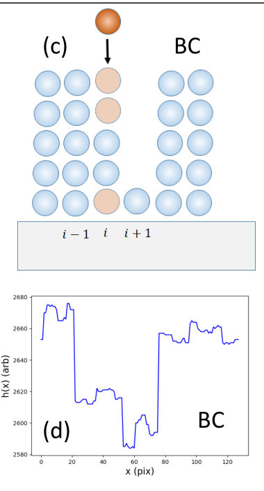
<figcaption class="paper-figure-caption"><b>Fig 1.</b> Figure 1. (a) Schematic depiction of growth rule for BD where an atom always attaches the first time it encounters a nearest neighbor; (b) Simulated interface profile for a BD interface on an L=128 lattice after 106 time steps; (c) Schematic depiction of the evolution rule for BC where the height at column I can evolve with equal probability to hi+1, hi-1, or hi+1 as indicated by the lightly-shaded circles; (d) Simulated interface profile for a BC evolution on an L=128 lattice after 106 time steps.</figcaption>
</figure>
<figure class="paper-figure-card">
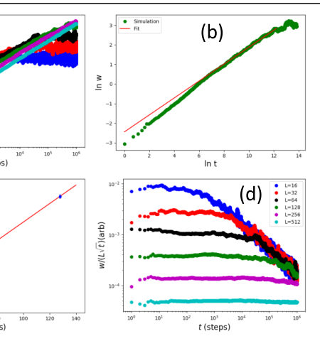
<figcaption class="paper-figure-caption"><b>Fig 2.</b> Figure 2. (a) Interface width for the BC model as s function of time for different length systems; (b) Example of an early time fit to a width function for L=128 to extract the growth exponent; (c) Average saturation width as a function of length showing linear behavior indicating a=1; (d) Width data from part (a) scaled by dividing out Lt with = 1 and =1/2 .</figcaption>
</figure>
<figure class="paper-figure-card">
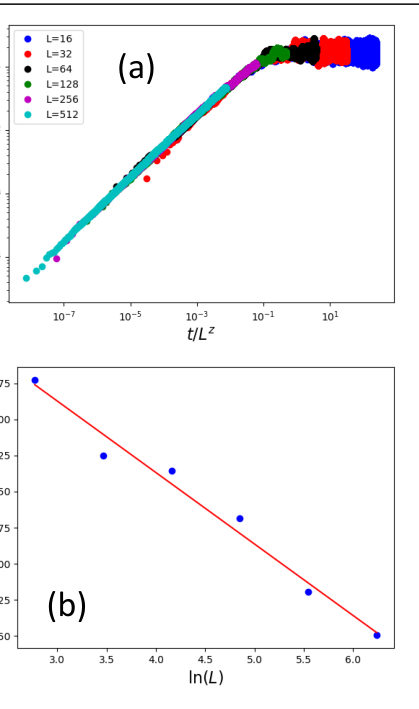
<figcaption class="paper-figure-caption"><b>Fig 3.</b> Figure 3. (a) Width data from Figure 2(a) scaled according to the Family-Vicsek form with =1 and z=3; (b) width scaled by dividing out tb as as function of length showing power law decay as L- with =0.50± 0.05.</figcaption>
</figure>
<figure class="paper-figure-card">
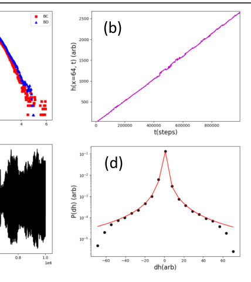
<figcaption class="paper-figure-caption"><b>Fig 4.</b> Figure 4. (a) Probability distribution of interface heights for many independent evolutions of the BC and BD model; (b) Example of an the time evolution of the height of the mid-point of an L=128 system over 106 time steps (c) Height changes at every time step at every changing location on the interface during the evolution in part (b); (d) Probability distribution of height changes constructed as a histogram of the data in part (c). The solid red curve is a Cauchy Lorentz fit.</figcaption>
</figure>
</div>

<p><strong>Summary.</strong> This paper investigates the Brownian Castle (BC) interface growth model, finding it belongs to a new universality class distinct from standard models like Ballistic Deposition. Through extensive simulations, the authors determine specific scaling exponents and show that the height fluctuations follow non-Gaussian statistics characterized by Cauchy-Lorentz tails. This work advances the understanding of complex, driven interfaces in statistical physics.</p>
<p><strong>Why it may be interesting.</strong> While focused on classical interface growth, the analysis of non-Gaussian statistics (Cauchy-Lorentz tails) and deviations from standard scaling laws provides insights into complex, non-equilibrium dynamics relevant to open quantum systems or driven many-body processes where simple thermal assumptions fail.</p>
<details>
<summary>Detailed structure</summary>
<p><strong>Main problem.</strong> The study characterizes a new universality class associated with interface growth dynamics by analyzing modified Family-Vicsek scaling properties and probability distributions.</p>
<p><strong>Main result.</strong> The Brownian Castle (BC) interface exhibits modified scaling exponents ($eta \approx 0.47$, $\alpha \approx 1.01$) and shows that the height change distribution follows a Cauchy-Lorentz form, suggesting large jumps.</p>
<p><strong>Method.</strong> Numerical simulations are used to extract growth and roughness exponents via fitting double logarithmic plots, complemented by data collapse analysis and statistical testing of probability distributions.</p>
<p><strong>Model / system.</strong> The system is the Brownian Castle (BC) interface growth model, a variation on Ballistic Deposition that allows for material removal. It is compared against established models like BD, which falls into the KPZ universality class.</p>
<p><strong>Key observables.</strong> Interface width $w(L, t)$, growth exponent ($eta$), roughness exponent ($\alpha$), and probability distributions of height changes ($p(dh)$).</p>
<p><strong>Important parameters / regimes.</strong> System size ($L$) up to 512 sites, time steps up to $10^6$, and the derived scaling exponents $eta=0.47 \pm 0.01$ and $\alpha=1.01 \pm 0.01$.</p>
<p><strong>Assumptions / limitations.</strong> The standard scaling relationship $z = \alpha/eta$ may break down due to finite size effects, which is noted when comparing derived exponents to the exponent observed during data collapse ($z=3$).</p>
<p><strong>Figures summary.</strong> Figures illustrate schematic growth rules for BD vs. BC, show interface width evolution over time and system size (determining $eta$ and $\alpha$), and demonstrate near-perfect data collapse using a specific scaling function.</p>
<p><strong>Paper structure.</strong> The paper introduces the BC model variation, presents numerical simulations to calculate scaling exponents ($\alpha, eta$) via fitting, analyzes data collapse for consistency checks, and finally examines probability distributions (heights and height changes) to characterize the underlying stochastic process.</p>
</details>
<details>
<summary>Abstract</summary>
<p>The Brownian Castle is a new interface growth model that is a variation on the well-known ballistic deposition model that results in an entirely new universality class. We present numerical verification that the interface width for BC interfaces displays modified Family-Vicsek scaling properties up to finite size corrections. Specifically, we find a growth exponent of $β=0.470 \pm 0.012$ and a roughness exponent of $α=1.01 \pm 0.018$. The scaling is modified at short times with a size scaling exponent that described the early time dependence of interface width on length. The probability distribution of heights for the BC interface shows significant deviations from simple Gaussian behavior and the probability distribution of height changes shows a Cauchy-Lorentz form consistent with expectations for a process involving relatively large jumps.</p>
</details>
<p><sub><a href="#top">↑ back to top</a></sub></p>

<p><a id="paper-2607.13870"></a></p>
<h3 id="phonon-down-conversion-by-normal-metals-for-superconducting-devices"><a href="http://arxiv.org/abs/2607.13870v1">Phonon down-conversion by normal metals for superconducting devices</a></h3>
<p><strong>Authors:</strong> Guglielmo La Magna, Gianluigi Catelani<br>
<strong>Type:</strong> theory · <strong>Category:</strong> other · <strong>PDF:</strong> <a href="https://arxiv.org/pdf/2607.13870v1">https://arxiv.org/pdf/2607.13870v1</a><br>
<strong>Analysis basis:</strong> full PDF text, analyzed in chunks
<strong>Topic relevance:</strong> <code>methods for driven-dissipative</code> <strong>3/5</strong> · <code>non-equilibrium dynamics</code> <strong>3/5</strong> · <code>driven-dissipative phase transition</code> <strong>2/5</strong> · <code>non-equilibrium universality</code> <strong>2/5</strong> · <code>Keldysh / 2PI / non-Gaussian methods</code> <strong>1/5</strong> · <code>Kondo &amp; dissipative impurity</code> <strong>1/5</strong> · <code>correlated / nonlocal dissipation</code> <strong>1/5</strong></p>
<div class="figure-strip-hint">↔ Scroll figures horizontally</div>
<div class="paper-figures-scroll">
<figure class="paper-figure-card">
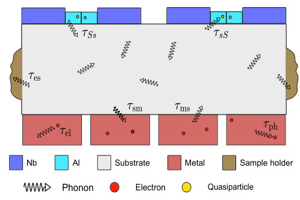
<figcaption class="paper-figure-caption"><b>Fig 1.</b> FIG. 1. Schematic depiction of a superconducting qubit chip with normal metal islands on the backside. The physical pro- cesses included in the kinetic equations are all represented: phonon escape to the sample holder (lifetime τes); phonon transmission from substrate to metal (τsm) and from metal to substrate (τms); electron-phonon interaction (τel and τph). Phonon transmission at the substrate-superconductor inter- face (τsS and τSs) has to be accounted for in the calculation of the down-conversion efficiency.</figcaption>
</figure>
<figure class="paper-figure-card">
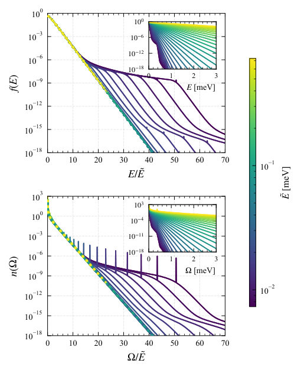
<figcaption class="paper-figure-caption"><b>Fig 2.</b> FIG. 2. (a) Electron distribution f(E) and (b) phonon distribution n(Ω) in a Cu film under steady, monochromatic phonon injection at Ωinj = 0.37 meV ≳2∆Al The dashed lines correspond to the electron distribution in Eq. (41) in panel (a), and to the phonon distribution in Eq. (44) in panel (b).</figcaption>
</figure>
<figure class="paper-figure-card">
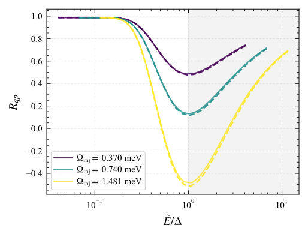
<figcaption class="paper-figure-caption"><b>Fig 3.</b> FIG. 3. Down-conversion efficiency Rqp, Eq. (46), vs. nor- malized ‘effective temperature’ ˜E/∆for a 100 nm Al film (∆= 0.18 meV, λ ≃0.44) and three values of injection en- ergy, see legend. The solid lines are obtained from numerics, the dashed lines using Eq. (53) (the discrepancy is due to λ &lt; 0.5 being outside the validity regime of analytical ap- proximations). In the shaded region, ˜E/∆&gt; 1, energetic quasiparticles in the superconductor can emit phonons and limit the efficiency; we exclude this regime from our analysis.</figcaption>
</figure>
<figure class="paper-figure-card">
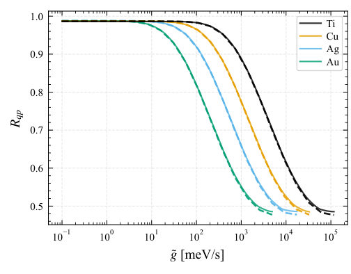
<figcaption class="paper-figure-caption"><b>Fig 4.</b> FIG. 4. Down-conversion efficiency Rqp vs. the effective injection rate ˜g for Au, Cu, Ti, and Ag at Ωinj = 0.37 meV. Solid lines: full numerical evaluation. Dashed lines: analyt- ical approximation of Eq. (53). The lines end at ˜g values corresponding to ˜E/∆≃1.</figcaption>
</figure>
<figure class="paper-figure-card">
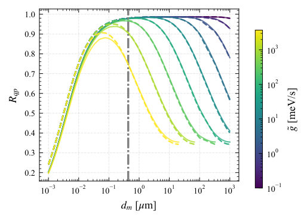
<figcaption class="paper-figure-caption"><b>Fig 5.</b> FIG. 5. Down-conversion efficiency Rqp vs. normal-metal thickness for Ωinj = 0.5 meV; the metal is Cu, other param- eters as in Fig. 3. Solid lines: full numerical evaluation. Dashed lines: analytical approximation of Eq. (58). The lines end at dm values corresponding to ˜E/∆≃1. The vertical dot-dashed line demarcates the minimum thickness for effi- cient down-conversion according to Eq. (56).</figcaption>
</figure>
</div>

<p><strong>Summary.</strong> This paper models how high-energy phonons, which can damage superconducting qubits, are suppressed through a process called down-conversion within an adjacent normal metal film. By solving coupled kinetic equations for electron and phonon populations, the authors determine that this mitigation mechanism is most effective when the normal metal layer has a thickness near one micron.</p>
<p><strong>Why it may be interesting.</strong> This work directly addresses energy dissipation mechanisms in superconducting circuits, which is crucial for maintaining quantum coherence. The detailed kinetic modeling of phonon relaxation provides insights into open quantum system dynamics driven by the environment (phonons).</p>
<details>
<summary>Detailed structure</summary>
<p><strong>Main problem.</strong> The primary goal is mitigating quasiparticle poisoning in superconducting devices caused by pair-breaking phonons.</p>
<p><strong>Main result.</strong> Phonon down-conversion efficiency, which reduces the damaging high-energy phonons, is found to be nearly optimal over a finite range of normal metal thicknesses, typically around one micron.</p>
<p><strong>Method.</strong> The study employs kinetic equation modeling solved in the steady state to track phonon and electron distributions. Analytical and numerical solutions are used to calculate the down-conversion efficiency based on material parameters.</p>
<p><strong>Model / system.</strong> The system involves a superconducting device coupled via a normal metal film to a substrate, where high-energy phonons scatter off electrons, transferring energy and lowering the phonon energy below the pair-breaking threshold.</p>
<p><strong>Key observables.</strong> Down-conversion efficiency ($R_{qp}$ or $R_\lambda$), electron distribution function ($f(E)$), and phonon distribution functions ($n(\Omega)$, $n_s(\Omega)$).</p>
<p><strong>Important parameters / regimes.</strong> Material parameters like electron-phonon interaction strength, phonon transmission coefficients ($  au_{sm},    au_{ms}$), film thickness ($d_m$), and substrate thickness ($d_s$).</p>
<p><strong>Assumptions / limitations.</strong> Approximations include neglecting spatial gradients, assuming particle–hole symmetry for electrons, using the Debye model for phonons (ignoring anharmonic effects), and neglecting electron-electron scattering.</p>
<p><strong>Figures summary.</strong> Figures illustrate the physical setup (superconducting qubit chip with normal metal islands) and show the steady-state evolution of electron and phonon distributions under various injection conditions.</p>
<p><strong>Paper structure.</strong> The paper develops a kinetic equation model for coupled phonon/electron dynamics, solves for the steady state using limiting cases (no-metal, perfect absorption), derives explicit formulas for down-conversion efficiency via asymptotic analysis, and discusses parameter dependence on geometry.</p>
</details>
<details>
<summary>Abstract</summary>
<p>Thanks to low dissipation, superconducting devices are promising for a number of applications, such as detectors and implementations of quantum computation. However, their working can be adversely impacted by quasiparticles, which is why so-called quasiparticle poisoning mechanisms and their mitigation are under intense investigation. Here we focus on one poisoning mechanism, namely pair-breaking phonons, and its mitigation through down-conversion by a normal-metal film - the process in which scattering of high-energy phonons by electrons lowers the energy of the former below the pair-breaking threshold. To study the down-conversion, we introduce a model based on kinetic equations, which we solve both analytically (approximately) and numerically in the steady state. We use the solution the estimate a properly-defined down-conversion efficiency which depends on material parameters (such as the strength of electron-phonon interaction and the phonon transmission coefficient at interfaces) and film and substrate thicknesses. Interestingly, we find that the efficiency is nearly optimal over a finite range of metal thicknesses, with the minimum near-optimal thickness being typically of the order of a micron.</p>
</details>
<p><sub><a href="#top">↑ back to top</a></sub></p>

<p><a id="paper-2607.13213"></a></p>
<h3 id="exact-collective-first-passage-statistics-of-n-trail-interacting-walkers"><a href="http://arxiv.org/abs/2607.13213v1">Exact collective first-passage statistics of N trail-interacting walkers</a></h3>
<p><strong>Authors:</strong> Paul Pineau, Julien Brémont, Olivier Bénichou, Raphaël Voituriez<br>
<strong>Type:</strong> theory · <strong>Category:</strong> statistical mechanics · <strong>PDF:</strong> <a href="https://arxiv.org/pdf/2607.13213v1">https://arxiv.org/pdf/2607.13213v1</a><br>
<strong>Analysis basis:</strong> full PDF text, analyzed in chunks
<strong>Topic relevance:</strong> <code>non-equilibrium dynamics</code> <strong>3/5</strong> · <code>correlated / nonlocal dissipation</code> <strong>2/5</strong> · <code>non-equilibrium universality</code> <strong>2/5</strong> · <code>Keldysh / 2PI / non-Gaussian methods</code> <strong>1/5</strong> · <code>analog quantum simulation</code> <strong>1/5</strong> · <code>driven-dissipative phase transition</code> <strong>1/5</strong> · <code>entanglement &amp; information structure</code> <strong>1/5</strong> · <code>methods for driven-dissipative</code> <strong>1/5</strong></p>
<div class="figure-strip-hint">↔ Scroll figures horizontally</div>
<div class="paper-figures-scroll">
<figure class="paper-figure-card">
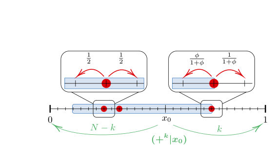
<figcaption class="paper-figure-caption"><b>Fig 1.</b> Figure 1: Schematic dynamics of three SATWϕ walkers launched from x0. Red dots denote walkers, and blue regions denote sites already visited. In the interior of the visited domain, motion is symmetric (left inset), whereas at the boundary the jump proba- bilities become asymmetric (right inset). Corresponding values of the probabilities are shown above the arrows. The splitting event (+k|x0) (in green) corresponds to the event where k (resp. N −k) walkers are absorbed at wall 1 (resp. N −k at wall 0).</figcaption>
</figure>
<figure class="paper-figure-card">
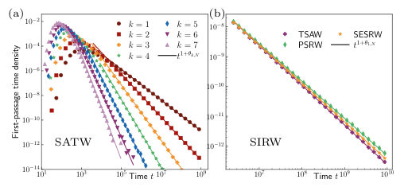
<figcaption class="paper-figure-caption"><b>Fig 2.</b> Figure 2: Numerical verification multi-particles persistence expo- nents. First-passage densities of the (a) (N −k + 1)th absorbed SATWϕ [Eq. (2)], with N = 10, ϕ = 0.5, and 1 ≤k ≤7, averaged over 108 realizations; (b) last surviving walker [Eq. (3)] for several SIRW models (TSAW, PSRW, SESRW) with N = 4, averaged over 106 realizations. Simulations are performed on a 1D lattice with discrete time and space.</figcaption>
</figure>
<figure class="paper-figure-card">
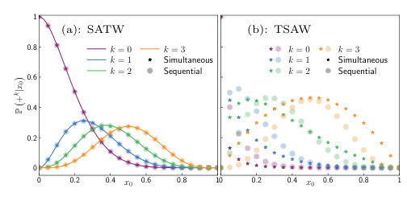
<figcaption class="paper-figure-caption"><b>Fig 3.</b> Figure 3: Splitting probabilities for (a) N = 6 SATWϕ compared with Eqs. (4) and (5), and for (b) N = 6 TSAW launched from x0, for both simultaneous and sequential protocols. Symbols: sim- ulations averaged over 105 realizations; solid lines: theoretical pre- dictions.</figcaption>
</figure>
<figure class="paper-figure-card">
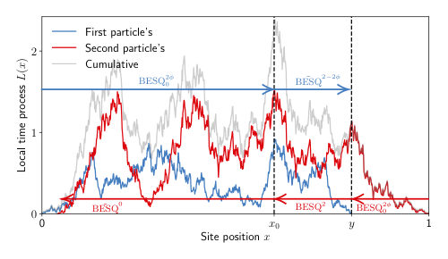
<figcaption class="paper-figure-caption"><b>Fig 4.</b> Figure 5: One realization of the local time process for 2 sequentially launched SATWϕ after the first (resp. second) one is absorbed at wall 0 (resp. one): in the space explored by the first particle, the second particle is behaving as a simple symmetric and so is its local time.</figcaption>
</figure>
<figure class="paper-figure-card">
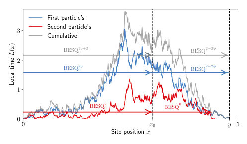
<figcaption class="paper-figure-caption"><b>Fig 5.</b> Figure 4: One realization of the local time process for 2 sequentially launched SATWϕ after both are absorbed at wall 0: in the space [0, y] explored by the first particle (whose local time is in blue), the second particle is behaving as a simple symmetric and so is its local time (in red). The cumulative local time is in grey and is independent of the launching protocol, or of the speed of the walkers.</figcaption>
</figure>
</div>

<p><strong>Summary.</strong> This paper develops an exact theoretical framework for analyzing how multiple active agents interact when their movement is dictated by a shared, memory-retaining 'trail field.' It derives precise formulas for collective first-passage statistics, notably proving that under saturating interaction conditions, the order of exploration does not affect the final absorption probabilities.</p>
<p><strong>Why it may be interesting.</strong> While focused on classical random walks, the mathematical techniques used—analyzing non-equilibrium dynamics governed by environmental memory and deriving exact scaling laws—are highly relevant to open quantum systems where environment coupling leads to persistent correlations.</p>
<details>
<summary>Detailed structure</summary>
<p><strong>Main problem.</strong> The study characterizes collective first-passage statistics for multiple interacting random walkers whose movement is influenced by a shared, history-dependent environmental 'trail field.'</p>
<p><strong>Main result.</strong> For saturating interactions (SATW$\phi$), the splitting probabilities are exactly identical whether the walkers start simultaneously or sequentially, establishing an exact framework for such memory effects.</p>
<p><strong>Method.</strong> The analysis involves deriving exact analytical expressions by representing the collective trail field using squared Bessel processes and generalizing Ray-Knight theorems to $N$ particles.</p>
<p><strong>Model / system.</strong> The model consists of N one-dimensional random walkers (SIRWs) whose jump probabilities depend on a shared local time profile, distinguishing between saturating ($ ext{SATW}_\phi$) and non-saturating interaction regimes.</p>
<p><strong>Key observables.</strong> Persistence exponents ($   heta_{k,N}$) and splitting probabilities ($P_{+k|x_0}$), which quantify the probability of $k$ walkers reaching one boundary before another.</p>
<p><strong>Important parameters / regimes.</strong> The number of walkers ($N$), the interaction strength parameter ($\phi$), and the dimensionality ($d=1$).</p>
<p><strong>Assumptions / limitations.</strong> The rigorous analytical results are established for the saturating class ($  ext{SATW}_\phi$); deviations occur in non-saturating cases.</p>
<p><strong>Figures summary.</strong> Figures illustrate schematic dynamics, numerical verification of persistence exponents across different models, and comparisons showing that splitting probabilities match theory for SATW$\phi$ but show protocol dependence for TSAWs.</p>
<p><strong>Paper structure.</strong> The paper progresses from defining the physical problem to deriving exact expressions for observables like survival probabilities and splitting probabilities. It then demonstrates the key invariance property for SATW$\phi$ by relating sequential and simultaneous protocols via local time additivity, concluding with general scaling arguments for exponents.</p>
</details>
<details>
<summary>Abstract</summary>
<p>Memory encoded in the environment mediates interactions between active agents, from trail-following organisms to synthetic active matter depositing persistent tracks. Although such memory is known to strongly affect transport, its consequences for collective first-passage phenomena remain largely unexplored. Here we study $N$ one-dimensional random walkers interacting through a shared trail field. We characterize the $k^{\rm th}$ (among $N$) arrival time at a fixed target, and the probability that exactly $k$ walkers in $[0,1]$ reach one boundary before the other. For the broad class of self-interacting walkers with a saturating response to the trail, we derive exact expressions for the corresponding persistence exponents and splitting probabilities. Strikingly, despite the strong history-dependent correlations generated by the common environment, splitting probabilities are exactly identical whether walkers explore simultaneously or one after another. This invariance breaks down for nonsaturating trail interactions. Our results follow from an exact representation of the collective trail field and establish a framework for first-passage phenomena in systems coupled through persistent environmental memory.</p>
</details>
<p><sub><a href="#top">↑ back to top</a></sub></p>

<p><a id="paper-2607.13937"></a></p>
<h3 id="quantum-observables-for-probabilistic-classical-particles"><a href="http://arxiv.org/abs/2607.13937v1">Quantum observables for probabilistic classical particles</a></h3>
<p><strong>Authors:</strong> Christof Wetterich<br>
<strong>Type:</strong> theory · <strong>Category:</strong> other · <strong>PDF:</strong> <a href="https://arxiv.org/pdf/2607.13937v1">https://arxiv.org/pdf/2607.13937v1</a><br>
<strong>Analysis basis:</strong> full PDF text, analyzed in chunks
<strong>Topic relevance:</strong> <code>quantum measurements</code> <strong>3/5</strong> · <code>Keldysh / 2PI / non-Gaussian methods</code> <strong>2/5</strong> · <code>measurement-induced transitions</code> <strong>2/5</strong> · <code>correlated / nonlocal dissipation</code> <strong>1/5</strong> · <code>driven-dissipative phase transition</code> <strong>1/5</strong> · <code>methods for driven-dissipative</code> <strong>1/5</strong> · <code>non-equilibrium dynamics</code> <strong>1/5</strong></p>
<div class="figure-strip-hint">↔ Scroll figures horizontally</div>
<div class="paper-figures-scroll">
<figure class="paper-figure-card">
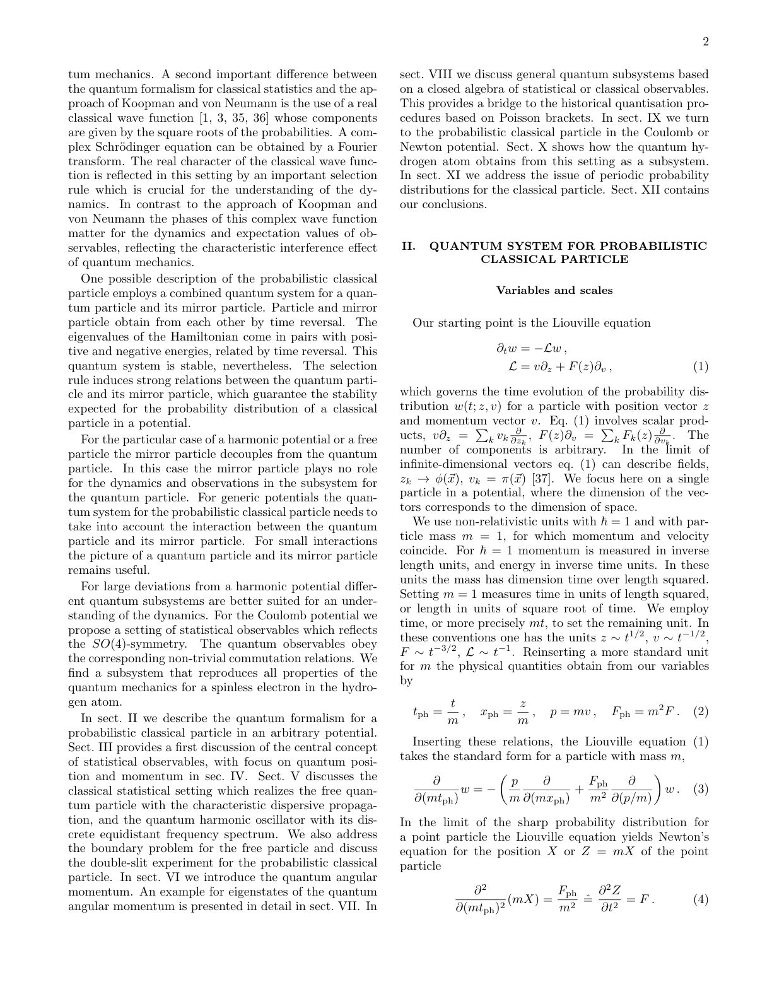
<figcaption class="paper-figure-caption"><b>Fig 1.</b> Low-resolution page preview, page 2</figcaption>
</figure>
<figure class="paper-figure-card">
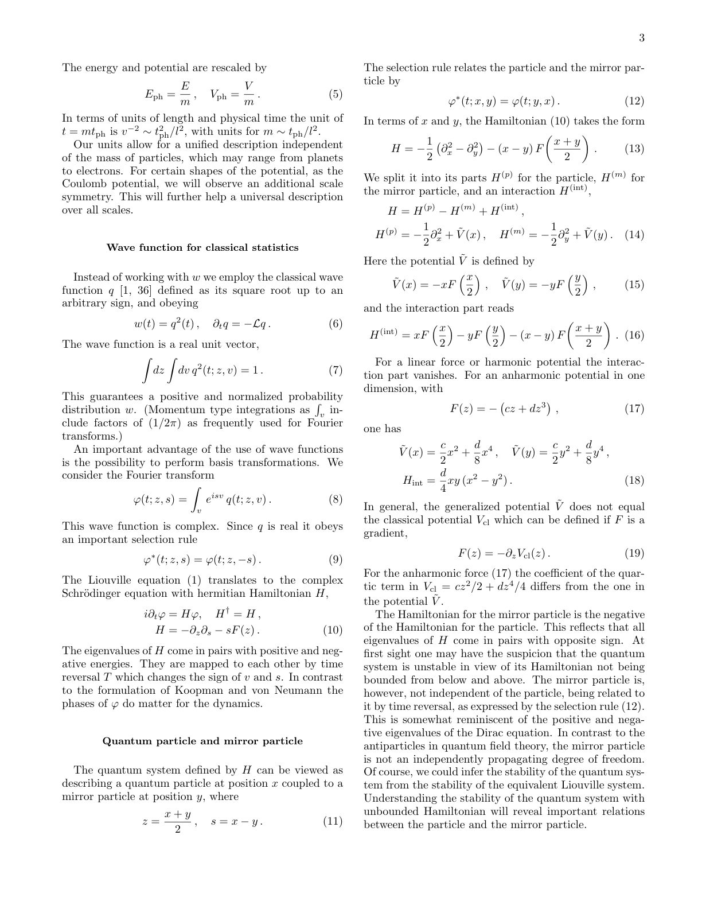
<figcaption class="paper-figure-caption"><b>Fig 2.</b> Low-resolution page preview, page 3</figcaption>
</figure>
<figure class="paper-figure-card">
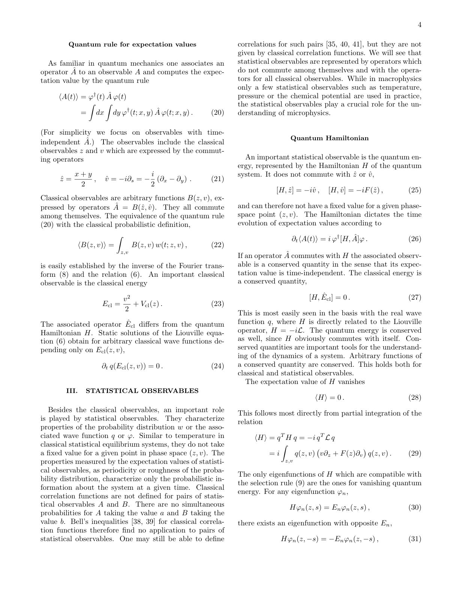
<figcaption class="paper-figure-caption"><b>Fig 3.</b> Low-resolution page preview, page 4</figcaption>
</figure>
<figure class="paper-figure-card">
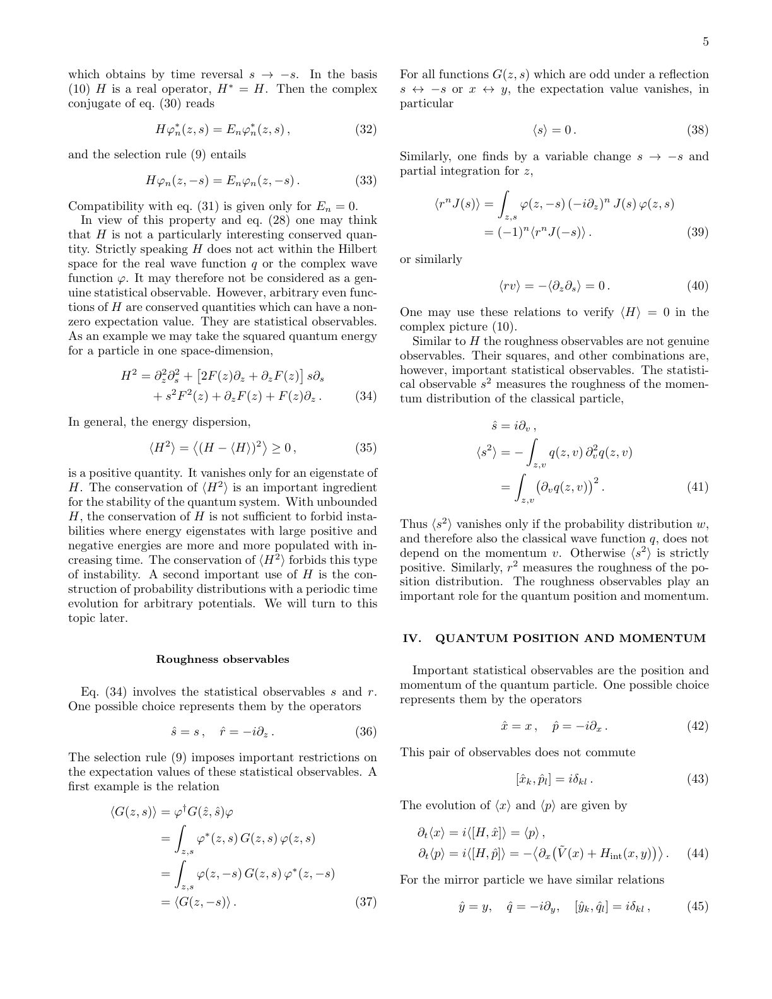
<figcaption class="paper-figure-caption"><b>Fig 4.</b> Low-resolution page preview, page 5</figcaption>
</figure>
<figure class="paper-figure-card">
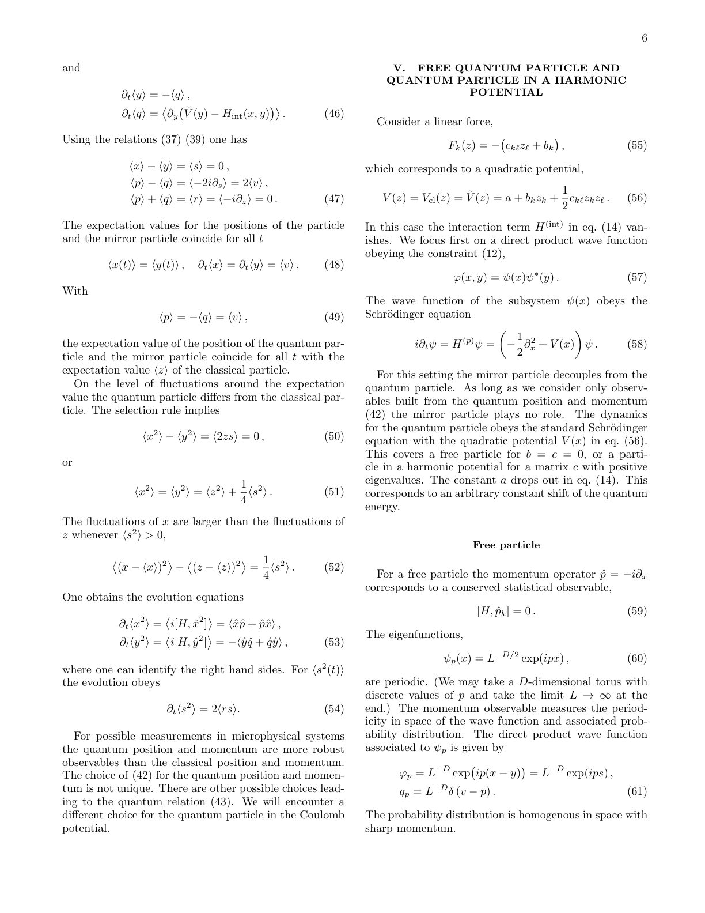
<figcaption class="paper-figure-caption"><b>Fig 5.</b> Low-resolution page preview, page 6</figcaption>
</figure>
</div>

<p><strong>Summary.</strong> This paper develops a novel framework to describe probabilistic classical particles using quantum mechanical formalism. It shows that robust 'quantum observables' can be defined for these systems, demonstrating how standard quantum mechanics (like the hydrogen atom spectrum) emerges as a specific subsystem of this larger statistical structure. This offers a theoretical bridge between classical probability theory and fundamental quantum principles.</p>
<p><strong>Why it may be interesting.</strong> This work provides a deep theoretical link between classical statistical mechanics and quantum theory by reformulating observables using non-commuting operators, which is highly relevant for understanding open quantum systems or measurement processes.</p>
<details>
<summary>Detailed structure</summary>
<p><strong>Main problem.</strong> The classical observables of position and momentum are inadequate for describing particles in microphysical situations with substantial probability distribution dispersion.</p>
<p><strong>Main result.</strong> The paper proposes a quantum formalism where statistical observables, represented by non-commuting operators, can describe probabilistic classical particles, showing how standard quantum mechanics emerges as a subsystem description.</p>
<p><strong>Method.</strong> It uses a quantum formalism applied to the Liouville equation for classical statistics, introducing complex wave functions derived via Fourier transforms and analyzing coupled particle-mirror dynamics.</p>
<p><strong>Model / system.</strong> The model involves probabilistic classical particles governed by the Liouville equation. The analysis is formalized using a complex Schrödinger equation describing a system composed of the original particle and its time-reversed 'mirror' counterpart.</p>
<p><strong>Key observables.</strong> Quantum observables (statistical observables), expectation values of position ($\langle x 
angle$), momentum ($\langle p 
angle$), and conserved statistical quantities like $\langle H^2 
angle$.</p>
<p><strong>Important parameters / regimes.</strong> The analysis is general but demonstrates specific results for the harmonic potential and the Coulomb potential.</p>
<p><strong>Assumptions / limitations.</strong> It assumes that a quantum system can emerge as a subsystem of a larger classical statistical framework, though it does not claim this applies to all physical reality.</p>
<p><strong>Paper structure.</strong> The paper progresses by first establishing the inadequacy of classical observables, then introducing the quantum formalism via the Liouville equation mapping, developing the coupled particle-mirror Hamiltonian, and finally demonstrating recovery of known quantum results (e.g., Hydrogen atom spectrum) in specific limits.</p>
</details>
<details>
<summary>Abstract</summary>
<p>The classical observables of position and momentum are not well adapted to particles in a microphysical situation where typical probability distributions are characterized by a substantial dispersion. We propose the use of more robust quantum observables for probabilistic classical particles. The quantum observables are statistical observables which do not take fixed values for a given classical position and momentum. Solutions of the Liouville equation are discussed in the quantum formalism for classical statistics. Statistical observables are represented by non-commuting operators. No classical correlation function is defined for these observables and Bell's inequalities do not apply. We demonstrate for a general potential how a quantum system emerges from classical statistics. For the particular cases of a harmonic potential and a Coulomb potential we investigate subsystems which describe all features of a quantum particle. This covers the discrete energy spectrum of the hydrogen atom and quantum harmonic oscillator. We discuss the interference for the double-slit experiment. Conserved statistical observables may also be relevant for the probabilistic dynamics of dust or planets.</p>
</details>
<p><sub><a href="#top">↑ back to top</a></sub></p>

<p><a id="paper-2607.13375"></a></p>
<h3 id="the-sample-pre-selection-and-characterization-station-at-the-secuf-instrumentation-capabilities-and-representative-scientific-achievements"><a href="http://arxiv.org/abs/2607.13375v1">The Sample Pre-selection and Characterization Station at the SECUF: Instrumentation, Capabilities, and Representative Scientific Achievements</a></h3>
<p><strong>Authors:</strong> Xu Chen, Tao Sun, Huifen Ren, Minjie Cui, Jun Luo, Shuai Zhang, Shaokui Su<br>
<strong>Type:</strong> experiment · <strong>Category:</strong> strongly correlated electrons · <strong>PDF:</strong> <a href="https://arxiv.org/pdf/2607.13375v1">https://arxiv.org/pdf/2607.13375v1</a><br>
<strong>Analysis basis:</strong> full PDF text, analyzed in chunks
<strong>Topic relevance:</strong> <code>exotic spin models in light-matter</code> <strong>3/5</strong> · <code>analog quantum simulation</code> <strong>2/5</strong> · <code>spintronics-quantum-optics interface</code> <strong>2/5</strong> · <code>Kondo &amp; dissipative impurity</code> <strong>1/5</strong> · <code>correlated cavity matter</code> <strong>1/5</strong> · <code>entanglement &amp; information structure</code> <strong>1/5</strong> · <code>non-equilibrium dynamics</code> <strong>1/5</strong></p>
<div class="figure-strip-hint">↔ Scroll figures horizontally</div>
<div class="paper-figures-scroll">
<figure class="paper-figure-card">
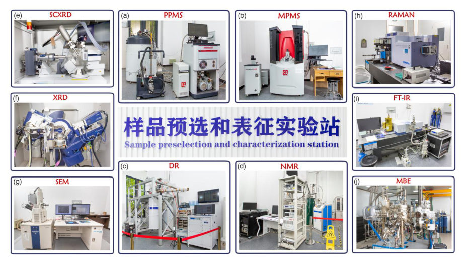
<figcaption class="paper-figure-caption"><b>Fig 1.</b> Fig. 1. Instrumentation of the F2 station, including (a) 16 T multifunctional ultra-low temperature physical</figcaption>
</figure>
<figure class="paper-figure-card">
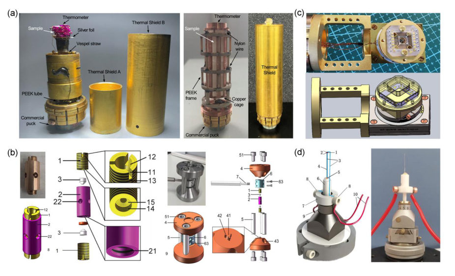
<figcaption class="paper-figure-caption"><b>Fig 2.</b> Fig. 2. Instrument upgrade of the F2 station, including (a) Photos of PPMS-based quasi-adiabatic</figcaption>
</figure>
<figure class="paper-figure-card">
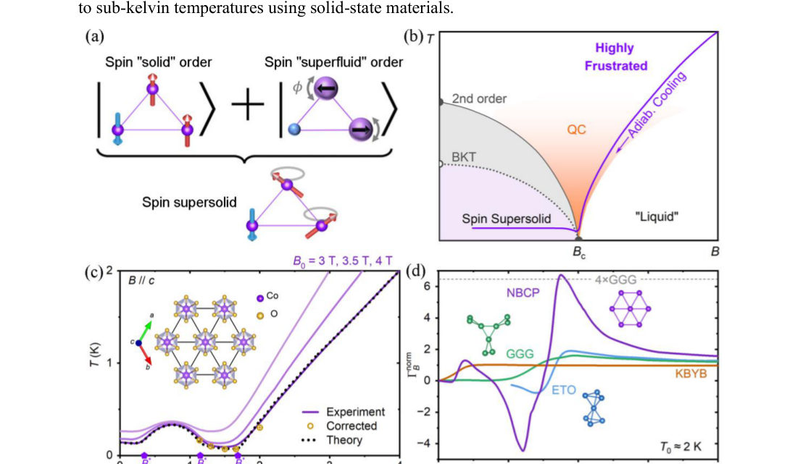
<figcaption class="paper-figure-caption"><b>Fig 3.</b> Fig. 3. Schematic illustration of spin supersolid formation on a two-dimensional triangular lattice, and</figcaption>
</figure>
<figure class="paper-figure-card">
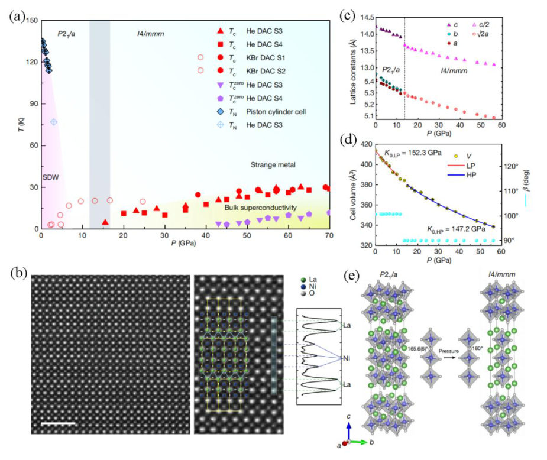
<figcaption class="paper-figure-caption"><b>Fig 4.</b> Fig. 4. Pressure-dependent phase diagram and lattice structure of La4Ni3O10-δ. Part of the Tc data in</figcaption>
</figure>
<figure class="paper-figure-card">
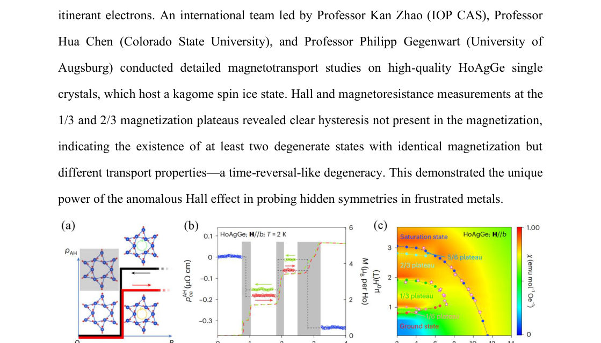
<figcaption class="paper-figure-caption"><b>Fig 5.</b> Fig. 5. Time-reversal-like degeneracies in field-induced plateau phases of HoAgGe. The anomalous</figcaption>
</figure>
</div>

<p><strong>Summary.</strong> This paper details the advanced instrumentation capabilities of the F2 Sample Pre-selection and Characterization Station at SECUF. By integrating multiple extreme conditions—such as high pressure, low temperature, and strong magnetic fields—the facility allows for comprehensive characterization of novel quantum materials. The reported achievements underscore its role in discovering exotic states like high-Tc superconductivity under immense pressure.</p>
<p><strong>Why it may be interesting.</strong> While focused on materials science instrumentation, the reported discoveries (superconductivity, quantum spin states) are central to strongly correlated electron physics, which often involves complex many-body interactions relevant to theoretical modeling.</p>
<details>
<summary>Detailed structure</summary>
<p><strong>Main problem.</strong> To provide comprehensive sample synthesis, processing, pre-screening, and characterization services to prepare high-quality specimens for frontier research under extreme physical conditions.</p>
<p><strong>Main result.</strong> The facility has enabled discoveries including novel quantum spin supersolid states, pressure-induced high-temperature superconductivity in nickelates, and giant anomalous Hall angles.</p>
<p><strong>Method.</strong> A suite of advanced experimental techniques is utilized, combining electrical transport measurements (resistivity, heat capacity) with structural characterization (XRD, SEM) under extreme conditions like ultrahigh pressure and ultralow temperature.</p>
<p><strong>Model / system.</strong> The research platform is the Synergetic Extreme Condition User Facility (SECUF), specifically detailing the F2 Sample Pre-selection and Characterization Station. This station integrates multiple physical controls: ultrahigh pressure, ultralow temperature, strong magnetic fields, and ultrafast optical fields.</p>
<p><strong>Key observables.</strong> Resistivity, heat capacity, magnetic susceptibility, structural parameters (lattice constants, crystal structure), anomalous Hall angle, and superconducting transition signatures.</p>
<p><strong>Important parameters / regimes.</strong> Temperatures down to $<10$ mK; Magnetic fields up to $\pm 16$ T; Pressures up to 70 GPa.</p>
<p><strong>Assumptions / limitations.</strong> The primary assumption is that the combination of extreme physical conditions can unlock novel quantum phases and material properties inaccessible under ambient conditions.</p>
<p><strong>Figures summary.</strong> Figures illustrate the comprehensive instrumentation overview, including PPMS, MPMS, DR, NMR, SCXRD, XRD, SEM, Raman, and FT-IR systems, alongside details of instrument upgrades like high-pressure cells.</p>
<p><strong>Paper structure.</strong> The paper details the specifications of ten core instrument systems within the F2 Station. It then highlights several breakthrough scientific achievements enabled by these combined capabilities, such as superconductivity in nickelates and anomalous Hall effects.</p>
</details>
<details>
<summary>Abstract</summary>
<p>The Synergetic Extreme Condition User Facility (SECUF) is a comprehensive, state-of-the-art user facility designed to provide integrated extreme physical conditions-including ultrahigh pressure, ultralow temperature, strong magnetic fields, and ultrafast optical fields-for frontier research in condensed matter physics and materials science. Within SECUF, the F2 Sample Pre-selection and Characterization Station plays a pivotal supporting role. Its mission is to provide comprehensive sample synthesis, processing, pre-screening, and characterization services to prepare high-quality specimens for subsequent experiments under extreme conditions. This paper details the specifications and performance of ten core instrument systems within these units. Furthermore, we highlight several breakthrough scientific achievements enabled by the F2 Station, encompassing the discovery of novel quantum spin supersolid states, pressure-induced high-temperature superconductivity in nickelates, giant anomalous Hall angles, and molecular water in lunar soil. We also outline ongoing technical developments that expand the station's capabilities, such as integrated high-pressure cells and self-built ancillary measurement systems.</p>
</details>
<p><sub><a href="#top">↑ back to top</a></sub></p>

<p><a id="paper-2607.14029"></a></p>
<h3 id="unified-terahertz-framework-for-magnetic-and-lattice-responses-reveals-an-elusive-ordering-transition-in-gdmath406mathrumath407mathomath408math"><a href="http://arxiv.org/abs/2607.14029v1">Unified Terahertz Framework for Magnetic and Lattice Responses Reveals an Elusive Ordering Transition in Gd$_2$Ru$_2$O$_7$</a></h3>
<p><strong>Authors:</strong> Nicolas M. Kawahala, Rafael L. Sabainsk, Esteban Marulanda, Rafael S. Freitas, Felix G. G. Hernandez<br>
<strong>Type:</strong> experiment · <strong>Category:</strong> strongly correlated electrons · <strong>PDF:</strong> <a href="https://arxiv.org/pdf/2607.14029v1">https://arxiv.org/pdf/2607.14029v1</a><br>
<strong>Analysis basis:</strong> full PDF text, analyzed in chunks
<strong>Topic relevance:</strong> <code>exotic spin models in light-matter</code> <strong>3/5</strong> · <code>spintronics-quantum-optics interface</code> <strong>3/5</strong> · <code>quantum optics experiment</code> <strong>2/5</strong> · <code>Keldysh / 2PI / non-Gaussian methods</code> <strong>1/5</strong> · <code>analog quantum simulation</code> <strong>1/5</strong> · <code>driven-dissipative phase transition</code> <strong>1/5</strong></p>
<div class="figure-strip-hint">↔ Scroll figures horizontally</div>
<div class="paper-figures-scroll">
<figure class="paper-figure-card">
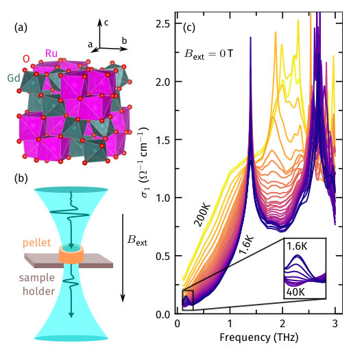
<figcaption class="paper-figure-caption"><b>Fig 1.</b> FIG. 1. (a) Gd2Ru2O7 crystal structure, rendered from data in the Materials Project [34]. (b) Schematic of the Faraday- geometry magneto-THz-TDS setup near the sample position. (c) Real part of the optical conductivity at zero external mag- netic field for temperatures between 1.6 (blue) and 200 K (yellow). Inset: Magnified view of the low-frequency region, highlighting the emergence of a resonance near 0.15 THz at low temperatures.</figcaption>
</figure>
<figure class="paper-figure-card">
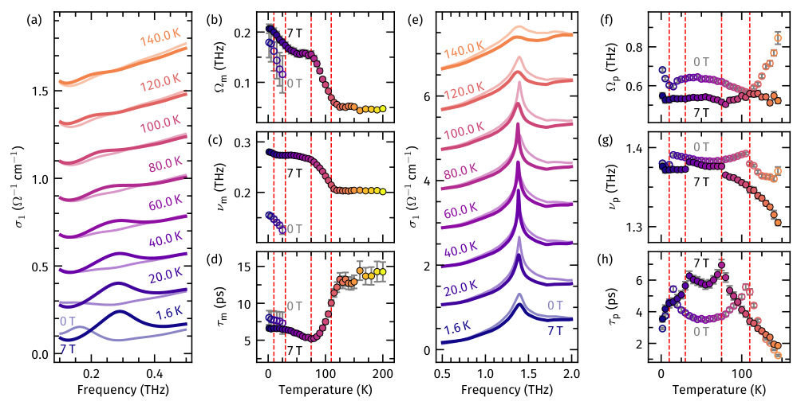
<figcaption class="paper-figure-caption"><b>Fig 2.</b> FIG. 2. (a) Low-frequency optical conductivity showing a resonance associated with exchange-split Gd levels, for representative temperatures, measured at Bext = 0 T (shaded lines) and 7 T (solid lines). Temperature dependence of the fitted (b) oscillator strength, (c) resonance frequency, and (d) scattering time for Bext = 0 T (hollow markers) and 7 T (filled markers). Vertical dashed lines mark characteristic temperatures associated with Ru- and Gd-related anomalies discussed in the text, with values 10, 30, 75 and 110 K. (e) Optical conductivity in the phonon frequency range at the same external magnetic fields and temperatures shown in (a). (f)–(h) Temperature dependence of the...</figcaption>
</figure>
<figure class="paper-figure-card">
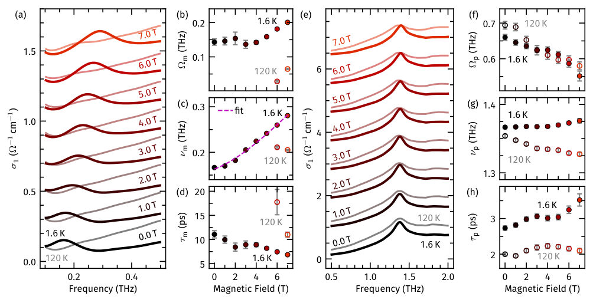
<figcaption class="paper-figure-caption"><b>Fig 3.</b> FIG. 3. (a) Low-frequency optical conductivity at 1.6 K (solid lines) and 120 K (shaded lines) for external magnetic fields from 0 to 7 T, showing a field-induced shift and enhancement of the Gd-related resonance. External magnetic-field dependence of the extracted (b) spectral weight, (c) resonance frequency, and (d) scattering time at 1.6 K (filled markers) and 120 K (hollow markers). In (c), the dashed line is a fit including internal and external field contributions. (e) Optical conductivity in the phonon frequency range at the same external magnetic fields and temperatures shown in (a). (f)–(h) Magnetic-field dependence of the phonon parameters. For clarity, spectra corresponding to...</figcaption>
</figure>
</div>

<p><strong>Summary.</strong> This work uses THz spectroscopy on $   ext{Gd}_2   ext{Ru}_2   ext{O}_7$ to simultaneously measure magnetic and lattice responses. By modeling the coupled evolution of these two spectral features, the authors successfully quantify an internal magnetic field and reveal a subtle Gd-ordering transition previously hidden from bulk measurements.</p>
<p><strong>Why it may be interesting.</strong> The technique provides a powerful, non-invasive way to probe coupled quantum phenomena (spin-lattice coupling) by separating and analyzing distinct energy scales within a single spectroscopic measurement.</p>
<details>
<summary>Detailed structure</summary>
<p><strong>Main problem.</strong> The study aims to understand how magnetic order couples to lattice vibrations (spin-lattice coupling) in $    ext{Gd}_2   ext{Ru}_2   ext{O}_7$ and reveal an ordering transition that is difficult to detect using standard bulk thermodynamic measurements.</p>
<p><strong>Main result.</strong> By simultaneously measuring magnetic excitations and optical phonons via THz spectroscopy, the authors quantified an internal exchange field ($B_{	ext{int}}$) consistent with cluster-multipolar order and provided independent spectroscopic evidence for a low-temperature Gd-ordering transition.</p>
<p><strong>Method.</strong> Magneto-Terahertz Time-Domain Spectroscopy (THz-TDS) was employed to measure the complex optical conductivity ($\sigma(
u)$) across both magnetic and phonon frequency ranges as a function of temperature and external magnetic field.</p>
<p><strong>Model / system.</strong> The physical system is the pyrochlore ruthenate $   ext{Gd}_2   ext{Ru}_2   ext{O}_7$, which contains localized $4f$ moments ($  ext{Gd}^{3+}$) coupled to itinerant $   ext{Ru}$ magnetism. The analysis models spectral features using uncoupled Lorentz oscillators superimposed on a quadratic background.</p>
<p><strong>Key observables.</strong> Low-frequency magnetic resonance parameters ($\Omega_m, 
u_m,    au_m$), optical phonon parameters ($\Omega_p, 
u_p,    au_p$), and the integrated spectral weights ($W_m, W_p$).</p>
<p><strong>Important parameters / regimes.</strong> Temperatures ranging from $1.6	ext{ K}$ to $200	ext{ K}$, external magnetic fields up to $7	ext{ T}$, and derived internal exchange field values ($\approx 5-6 	ext{ T}$).</p>
<p><strong>Assumptions / limitations.</strong> The analysis assumes that the spectral response in each region can be modeled by an uncoupled Lorentz oscillator on a smooth quadratic background, allowing for independent fitting of magnetic and phonon components.</p>
<p><strong>Figures summary.</strong> Figures illustrate the temperature and field dependence of resonance parameters ($\Omega, 
u,  au$) for both magnetic and phonon modes, showing correlated anomalies at characteristic ordering temperatures. Integrated spectral weights ($W_m, W_p$) are plotted as functions of T and B.</p>
<p><strong>Paper structure.</strong> The paper establishes a unified framework by analyzing the temperature and field dependence of two distinct spectroscopic signals—the low-frequency magnetic resonance and the optical phonon mode—to correlate them with known magnetic transition points in $    ext{Gd}_2   ext{Ru}_2   ext{O}_7$.</p>
</details>
<details>
<summary>Abstract</summary>
<p>Magnetic order in materials combining localized rare-earth moments with itinerant transition-metal sublattices generates internal fields whose lattice imprint is rarely accessed directly. In Gd pyrochlore ruthenate, we find that a single terahertz spectrum resolves an exchange-split Gd$^{3+}$ mode and an optical phonon. Their coupled evolution quantifies the internal field, oriented as predicted for cluster-multipolar order, and reveals a Gd-ordering transition elusive to bulk thermodynamic probes, establishing a unified framework for accessing magnetic and lattice responses in correlated quantum materials.</p>
</details>
<p><sub><a href="#top">↑ back to top</a></sub></p>

<p><a id="paper-2607.13680"></a></p>
<h3 id="magnetic-quadrupole-current-generation-and-accumulation-in-noncentrosymmetric-systems"><a href="http://arxiv.org/abs/2607.13680v1">Magnetic quadrupole current generation and accumulation in noncentrosymmetric systems</a></h3>
<p><strong>Authors:</strong> Yuuga Takasu, Satoru Hayami<br>
<strong>Type:</strong> theory · <strong>Category:</strong> strongly correlated electrons · <strong>PDF:</strong> <a href="https://arxiv.org/pdf/2607.13680v1">https://arxiv.org/pdf/2607.13680v1</a><br>
<strong>Analysis basis:</strong> full PDF text, analyzed in chunks
<strong>Topic relevance:</strong> <code>spintronics-quantum-optics interface</code> <strong>3/5</strong> · <code>Keldysh / 2PI / non-Gaussian methods</code> <strong>2/5</strong> · <code>methods for driven-dissipative</code> <strong>2/5</strong> · <code>analog quantum simulation</code> <strong>1/5</strong> · <code>exotic spin models in light-matter</code> <strong>1/5</strong> · <code>non-equilibrium dynamics</code> <strong>1/5</strong></p>
<div class="figure-strip-hint">↔ Scroll figures horizontally</div>
<div class="paper-figures-scroll">
<figure class="paper-figure-card">
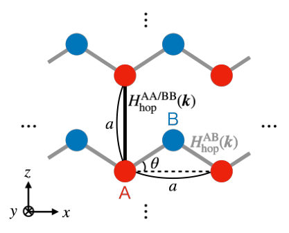
<figcaption class="paper-figure-caption"><b>Fig 1.</b> FIG. 1. Crystal structure of the two-dimensional coupled zigzag chains in the xz plane. The black (gray) bonds de- note the intra-sublattice hopping Hamiltonians HAA/BB hop (k) [inter-sublattice hopping HAB hop(k)], which together preserve the centrosymmetric point-group symmetry mmm.</figcaption>
</figure>
<figure class="paper-figure-card">
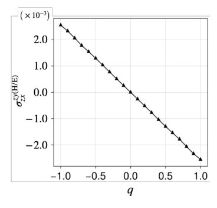
<figcaption class="paper-figure-caption"><b>Fig 2.</b> FIG. 2. Dependence of the dissipationless MQ Hall conduc- tivity σzy(H/E) zx on the symmetry-lowering parameter q. The finite response for q ̸= 0 demonstrates MQ-current generation induced by the symmetry reduction from mmm to mm2. We set V = 216.</figcaption>
</figure>
<figure class="paper-figure-card">
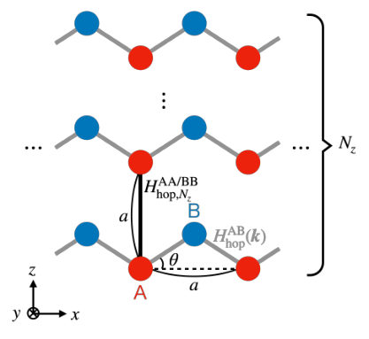
<figcaption class="paper-figure-caption"><b>Fig 3.</b> FIG. 3. Crystal structure of two-dimensional coupled zigzag chains having the edges along z direction. Black and gray lines represent the hopping processes described by HAA/BB hop,Nz and HAB hop(k), respectively. Nz stands for the number of x- directional zigzag chains.</figcaption>
</figure>
<figure class="paper-figure-card">
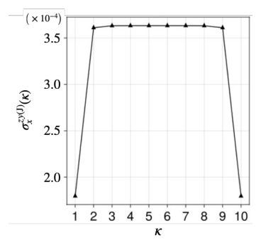
<figcaption class="paper-figure-caption"><b>Fig 4.</b> FIG. 4. Layer dependence of σzy(J) x (κ) for q = 0, Nz = 10, and V = 215Nz.</figcaption>
</figure>
<figure class="paper-figure-card">
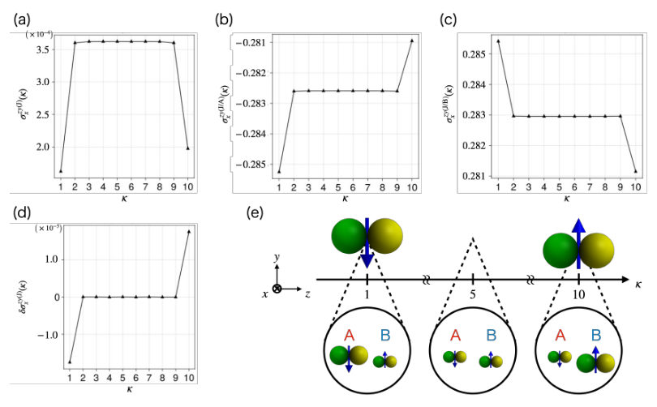
<figcaption class="paper-figure-caption"><b>Fig 5.</b> FIG. 5. (a) Layer dependence of the MQ conductivity σzy(J) x (κ) for q = 1, Nz = 10, and V = 215Nz. (b), (c) Layer dependence of the sublattice-resolved contributions, σzy(J/A) x (κ) and σzy(J/B) x (κ), obtained from Eq. (41) by restricting ρ, ρ′ = A and B,</figcaption>
</figure>
</div>

<p><strong>Summary.</strong> This paper theoretically establishes that magnetic quadrupole (MQ) currents can be generated and accumulated in noncentrosymmetric antiferromagnets, providing a novel pathway for controlling magnetization. Using advanced group theory and multipole expansions, the authors prove that this effect is intrinsically linked to the breaking of spatial inversion symmetry. This work provides a crucial theoretical framework for designing MQ-based spintronic devices.</p>
<p><strong>Why it may be interesting.</strong> While focused on condensed matter magnetism, the rigorous application of group theory to classify emergent transport responses (like quadrupole currents) provides powerful theoretical tools applicable to understanding symmetry breaking in complex quantum materials relevant to AMO physics.</p>
<details>
<summary>Detailed structure</summary>
<p><strong>Main problem.</strong> The study investigates magnetic quadrupole (MQ) current generation and accumulation in noncentrosymmetric antiferromagnets as a mechanism for controlling magnetization.</p>
<p><strong>Main result.</strong> MQ currents are generically allowed in noncentrosymmetric systems because the relevant conductivity tensor vanishes in centrosymmetric materials. The authors establish a framework showing MQ accumulation at sample edges, analogous to the spin Hall effect.</p>
<p><strong>Method.</strong> The analysis employs symmetry group theory and multipole representation techniques (Kubo formula) to classify the components of the MQ conductivity tensor ($\sigma_{n\alpha i;j}$).</p>
<p><strong>Model / system.</strong> The focus is on noncentrosymmetric antiferromagnets, where the magnetic quadrupole moment constitutes the lowest-rank symmetry-allowed magnetic multipole for magnetization control.</p>
<p><strong>Key observables.</strong> MQ conductivity tensor ($\sigma_{n\alpha i;j}$), MQ current ($J_{n\alpha i}$), and MQ accumulation near sample edges.</p>
<p><strong>Important parameters / regimes.</strong> The analysis depends critically on the crystal point group symmetry, specifically comparing centrosymmetric vs. noncentrosymmetric subgroups (e.g., $mmm$ to $mm2$).</p>
<p><strong>Assumptions / limitations.</strong> The study operates within the linear-response regime initially but extends to analyze non-equilibrium accumulation effects.</p>
<p><strong>Figures summary.</strong> Notes mention figures illustrating the layer dependence of spin response in the mm2 phase and general references to tables summarizing multipole parities and conductivity components for various CPGs.</p>
<p><strong>Paper structure.</strong> The paper systematically establishes symmetry conditions for MQ current generation by constructing the multipole representation of the MQ conductivity tensor, demonstrating its necessity in parity-broken systems, and predicting edge accumulation effects.</p>
</details>
<details>
<summary>Abstract</summary>
<p>Magnetization control via magnetic octupole injection has recently been proposed for a new class of centrosymmetric antiferromagnets, namely $d$-wave altermagnets, where the magnetic octupole is the lowest-rank magnetic multipole allowed by symmetry and serves as an alternative carrier to spin injection. In contrast, in noncentrosymmetric antiferromagnets, the magnetic quadrupole (MQ) constitutes the lowest-rank symmetry-allowed magnetic multipole, suggesting that MQ currents can provide an efficient route toward magnetization control through MQ injection. Here, we establish the symmetry conditions for MQ-current generation by constructing the multipole representation of the MQ conductivity tensor and show that MQ currents are generically allowed in noncentrosymmetric crystallographic point groups. As a representative example, we demonstrate MQ-current generation in the linear-response regime associated with symmetry lowering from the centrosymmetric point group ($mmm$) to its noncentrosymmetric subgroup ($mm2$). Furthermore, we reveal MQ accumulation near sample edges, analogous to spin accumulation induced by the spin Hall effect. This edge accumulation provides direct evidence of MQ-current generation and constitutes a key prerequisite for realizing MQ injection and MQ-based magnetization control in noncentrosymmetric antiferromagnets.</p>
</details>
<p><sub><a href="#top">↑ back to top</a></sub></p>

<p><a id="paper-2607.13199"></a></p>
<h3 id="towards-stealthy-hyperuniform-networks-with-optimal-isotropic-complete-photonic-band-gaps-using-a-novel-inverse-design-procedure"><a href="http://arxiv.org/abs/2607.13199v1">Towards stealthy hyperuniform networks with optimal isotropic complete photonic band gaps using a novel inverse design procedure</a></h3>
<p><strong>Authors:</strong> Joel Steinegger, Paul J. Steinhardt, Christoph Räth, Salvatore Torquato, Michael A. Klatt<br>
<strong>Type:</strong> theory · <strong>Category:</strong> disordered systems and neural networks · <strong>PDF:</strong> <a href="https://arxiv.org/pdf/2607.13199v1">https://arxiv.org/pdf/2607.13199v1</a><br>
<strong>Analysis basis:</strong> full PDF text, analyzed in chunks
<strong>Topic relevance:</strong> <code>methods for driven-dissipative</code> <strong>3/5</strong> · <code>analog quantum simulation</code> <strong>2/5</strong> · <code>driven-dissipative phase transition</code> <strong>2/5</strong> · <code>interference shaping light</code> <strong>1/5</strong> · <code>non-equilibrium dynamics</code> <strong>1/5</strong> · <code>non-equilibrium universality</code> <strong>1/5</strong></p>
<div class="figure-strip-hint">↔ Scroll figures horizontally</div>
<div class="paper-figures-scroll">
<figure class="paper-figure-card">
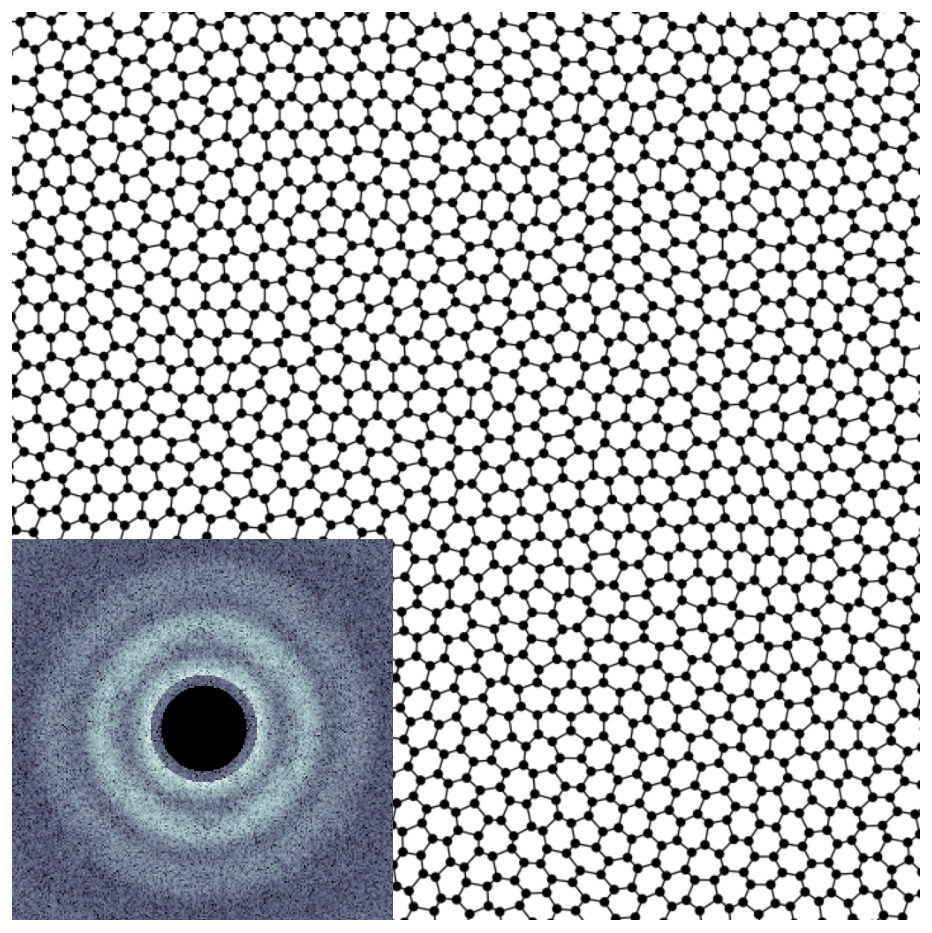
<figcaption class="paper-figure-caption"><b>Fig 1.</b> Figure 1: Realization of a stealthy hyperuniform disordered network: A representa- tive trivalent network generated via our new inverse design procedure (χ1(K1) = 0.37, χ2(K2) = 0.24), comprising 2,000 vertices. The main panel shows the pixelated grid used for band structure computations in MPB. The inset displays the corresponding spectral density ˜χV (k) on a logarithmic scale, confirming the isotropy and the stealthy hyperuni- form nature of the heterostructure.</figcaption>
</figure>
<figure class="paper-figure-card">
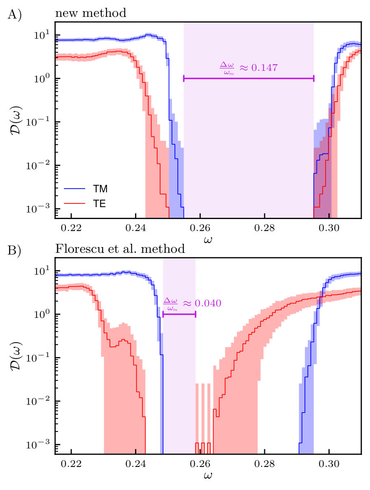
<figcaption class="paper-figure-caption"><b>Fig 2.</b> Figure 2: Density of states D(ω) averaged over 500 independent realizations for: A) the new inverse design method (r = 0.24, w = 0.08), and B) the original design approach by Florescu et al. [7] (r = 0.24, w = 0.10). Shaded regions represent the standard deviation within each bin (with width ∆ω ≈0.00092). The dielectric contrast was 13.0 in both cases, in alignment with established values from earlier studies.</figcaption>
</figure>
<figure class="paper-figure-card">
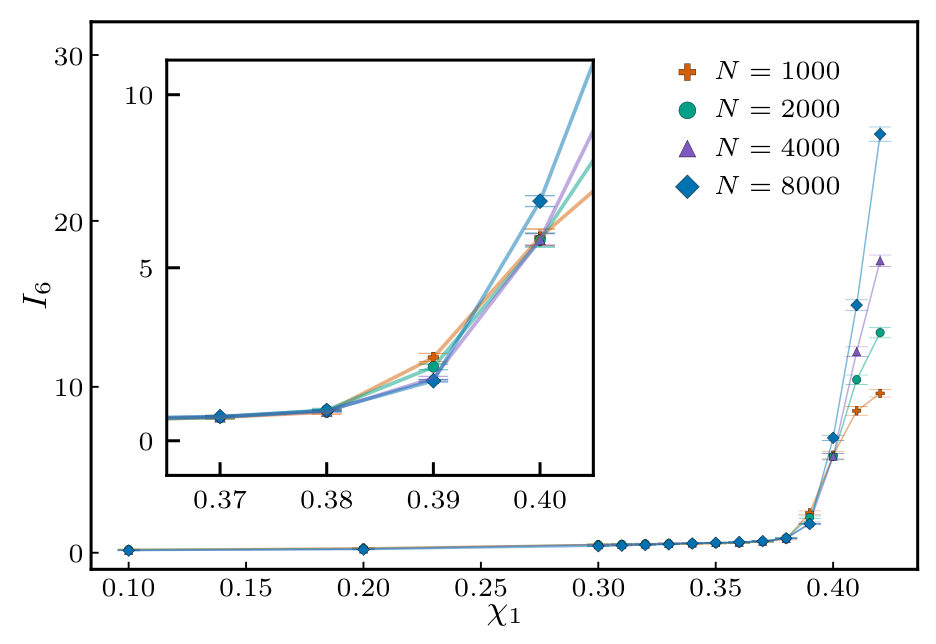
<figcaption class="paper-figure-caption"><b>Fig 3.</b> Figure 3: Disorder-to-order phase transition identified by the bond-orientational order parameter I6, plotted as a function of χ1(K1) for different system sizes (number of vertices N), where each data point represents an average over 128 independent realizations. The error bars denote one standard deviation. The inset provides a detailed view of the critical region χ ∈[0.37, 0.4]. The data exhibit clear evidence for a disorder-to-order phase transition at χ ≈0.39.</figcaption>
</figure>
<figure class="paper-figure-card">
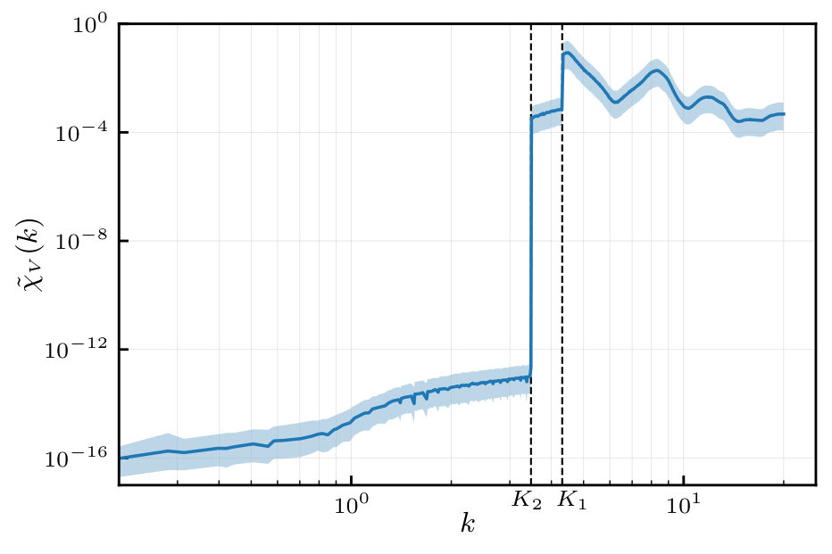
<figcaption class="paper-figure-caption"><b>Fig 4.</b> Figure 4: Spectral density ˜χV (k) of our stealthy hyperuniform networks (composed of disks and rectangles). The solid line shows the median of ˜χV (k) for 500 realizations. The shaded regions represent the interval between the 16th and 84th percentiles of the distribution within each bin (with width ∆k ≈0.0199).</figcaption>
</figure>
</div>

<p><strong>Summary.</strong> This paper introduces a novel two-stage inverse design technique to create 2D photonic networks that are inherently stealthy hyperuniform. By optimizing the network topology directly, the authors achieve isotropic complete photonic band gaps with unprecedented width and robustness across large ensembles of disordered structures.</p>
<p><strong>Why it may be interesting.</strong> While focused on photonics, the methodology—using inverse design coupled with hyperuniformity constraints ($ ilde{\chi}_V(k)=0$) to engineer macroscopic properties in a disordered medium—is highly relevant for designing artificial quantum materials or metamaterials where disorder must be controlled precisely.</p>
<details>
<summary>Detailed structure</summary>
<p><strong>Main problem.</strong> The core problem is achieving isotropic complete photonic band gaps (PBGs) in disordered 2D photonic networks that persist robustly as the system size approaches the thermodynamic limit.</p>
<p><strong>Main result.</strong> The authors developed a novel two-stage inverse design procedure that successfully creates such networks, yielding PBG widths comparable to anisotropic crystals and demonstrating robustness across ensembles up to 100,000 vertices.</p>
<p><strong>Method.</strong> They employ a two-stage inverse design optimization process targeting the stealthy hyperuniformity of the entire two-phase network structure directly, rather than just its progenitor point pattern.</p>
<p><strong>Model / system.</strong> The system is modeled as a 2D photonic network composed of high-dielectric disks at vertices and thin rectangular walls along bonds. The analysis uses the Density of States (DoS) ensemble method to probe large-scale behavior.</p>
<p><strong>Key observables.</strong> Complete Photonic Band Gap (PBG), Stealthy Hyperuniformity ($  ilde{\chi}_V(k)$), Gap-to-Midgap Ratio, and Defect State Density.</p>
<p><strong>Important parameters / regimes.</strong> Dielectric contrast of 13.0; target stealthy hyperuniformity values like $\chi_1(K_1) = 0.37$ and $\chi_2(K_2) = 0.24$.</p>
<p><strong>Assumptions / limitations.</strong> The analysis relies on the ensemble-based DoS method to approximate behavior in the thermodynamic limit, overcoming limitations of single-realization studies.</p>
<p><strong>Figures summary.</strong> Figures compare the Density of States (DoS) for TE and TM modes using the new inverse design method against prior art, showing robust band gap suppression. Spectral density plots confirm the hyperuniform nature across large ensembles.</p>
<p><strong>Paper structure.</strong> The paper progresses by first identifying the limitations of previous methods based on point patterns, then introducing the two-stage optimization protocol (global topology followed by network refinement), and finally validating the results using ensemble DoS calculations to prove thermodynamic stability.</p>
</details>
<details>
<summary>Abstract</summary>
<p>We present a two-stage inverse design procedure for producing disordered stealthy hyperuniform trivalent photonic networks in two dimensions with isotropic complete photonic band gaps (PBGs) blocking light regardless of direction or polarization (TE or TM) over a wide frequency range. Most ordinary disordered systems fail to maintain complete PBGs as system size increases. The only known exceptions that remain open in the largest simulations have been generated by mapping stealthy hyperuniform point patterns into trivalent networks. However, the resulting networks are not truly stealthy hyperuniform two-phase media. Although their PBGs remain open, they are relatively narrow due to limited overlap between the TE and TM band gaps and broad band tails caused by localized defect states. By contrast, our two-stage inverse design aims to make the final network itself stealthy hyperuniform, achieving unprecedented near-optimal overlap between the TE and TM band gaps and a small defect state density at the band edges. We obtain not only single realizations with large PBGs, but a striking homogeneity across a large ensemble, effectively probing a network with 100,000 vertices. This ensemble-based band gap is comparable in width to the complete PBG of an anisotropic honeycomb photonic crystal with the same network parameters and nearly an order of magnitude wider than the previously widest known isotropic complete PBGs. Our designs can be fabricated using additive manufacturing, offering new pathways to manipulate electromagnetic waves for photonic technologies.</p>
</details>
<p><sub><a href="#top">↑ back to top</a></sub></p>

<p><a id="paper-2607.13769"></a></p>
<h3 id="momentum-distribution-and-contact-parameters-of-a-mass-imbalanced-three-body-system-across-the-efimov-unatomic-transition"><a href="http://arxiv.org/abs/2607.13769v1">Momentum Distribution and Contact Parameters of a mass-imbalanced three-body system across the Efimov-Unatomic transition</a></h3>
<p><strong>Authors:</strong> D. S. Rosa, R. M. Francisco, T. Frederico, G. Krein, M. T. Yamashita<br>
<strong>Type:</strong> theory · <strong>Category:</strong> other · <strong>PDF:</strong> <a href="https://arxiv.org/pdf/2607.13769v1">https://arxiv.org/pdf/2607.13769v1</a><br>
<strong>Analysis basis:</strong> full PDF text, analyzed in chunks
<strong>Topic relevance:</strong> <code>analog quantum simulation</code> <strong>3/5</strong> · <code>non-equilibrium universality</code> <strong>2/5</strong> · <code>Keldysh / 2PI / non-Gaussian methods</code> <strong>1/5</strong> · <code>driven-dissipative phase transition</code> <strong>1/5</strong> · <code>non-equilibrium dynamics</code> <strong>1/5</strong></p>
<div class="figure-strip-hint">↔ Scroll figures horizontally</div>
<div class="paper-figures-scroll">
<figure class="paper-figure-card">
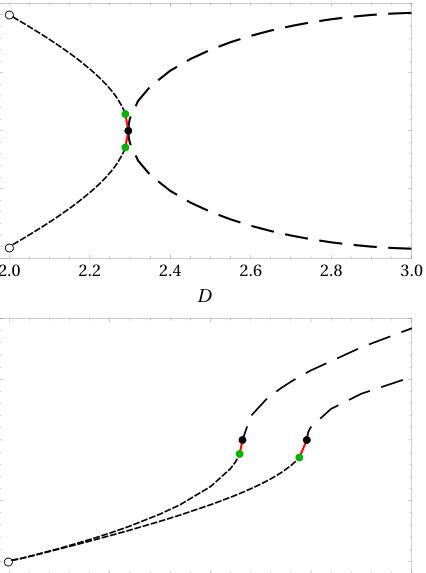
<figcaption class="paper-figure-caption"><b>Fig 1.</b> FIG. 1. Scaling parameter sn as a function of the spatial di- mension D for resonant mass-imbalanced three-body systems. Upper panel: Full behavior for the 23Na2 – 40K system, show- ing the Efimov regime (sn = ±is0) for D &gt; Dc, the critical di- mension Dc (black point), and the transition to real solutions below it. The green point marks D, below which the asymp- totic behavior of the momentum distribution is entirely gov- erned by a three-body contribution exhibiting power-law scal- ing, characteristic of the unatomic regime. The red segment highlights the intermediate scale invariant region between Dc and D. The open circle indicates the limit D →2+. Lower panel: Zoom of the transition...</figcaption>
</figure>
<figure class="paper-figure-card">
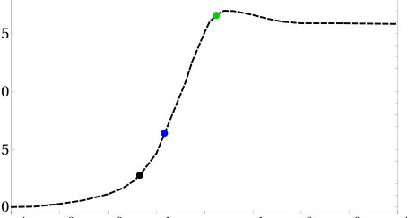
<figcaption class="paper-figure-caption"><b>Fig 2.</b> FIG. 2. Difference Dc −D, which defines the width of the Scale Invariant Regime (SIR), as a function of the mass ratio mB/mA. The SIR corresponds to the interval in dimension where the system is not described by either Efimov (discrete scaling) or unatomic (continuous scaling) regimes. The highlighted points indicate experimentally rel- evant heavy–heavy–light mixtures: 133Cs2 – 6Li, 41K2 – 6Li, and 23Na2 – 40K. As the mass imbalance increases, the width of the SIR decreases, indicating that the crossover between discrete and continuous scale invariance becomes increasingly localized in dimension.</figcaption>
</figure>
<figure class="paper-figure-card">
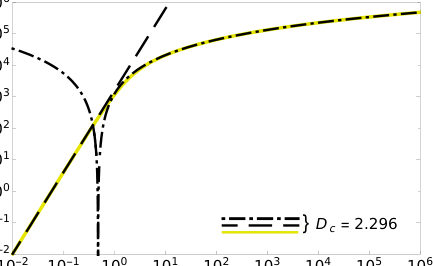
<figcaption class="paper-figure-caption"><b>Fig 3.</b> FIG. 3. Spectator function for the resonant system 23Na2 - 40K at the critical dimension Dc = 2.296 (bho/r2D = 0.986). The full solution Eq. (A16) (yellow) is compared with its asymptotic forms in the limits qB ≫κ0 (black dot-dashed, Eq. (3.5) and qB ≪κ0 Eq.(3.4) (black dashed), showing the rapid convergence of the logarithmic asymptotics at large mo- mentum.</figcaption>
</figure>
<figure class="paper-figure-card">
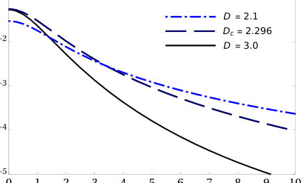
<figcaption class="paper-figure-caption"><b>Fig 4.</b> FIG. 5. Single particle momentum distribution of the reso- nant compound 23Na2 - 40K for different dimensions, namely, D = 3, Dc = 2.296 (harmonic-trap length of bho/r2D = 0.986) and D = 2.1.</figcaption>
</figure>
<figure class="paper-figure-card">
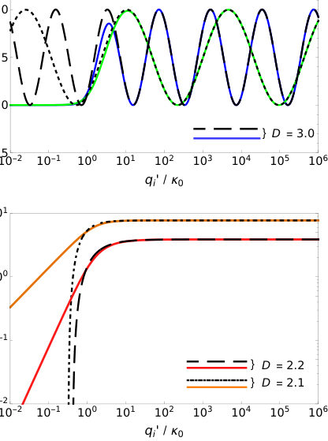
<figcaption class="paper-figure-caption"><b>Fig 5.</b> FIG. 4. Spectator functions in momentum space for the reso- nant system 23Na2 - 40K computed with Eq. (A16), compared to the zero-energy case from Eq.(3.1) considering different regimes of dimensions. Upper panel: for two different dimen- sions, namely D = 3 and D = 2.4 (harmonic-trap length of bho/r2D = 1.195), we compare the spectator functions for fi- nite three-body energy (colored lines) with the zero-energy case (3.1) (dashed and dotted black lines). Lower panel: we compare the spectator functions for finite three-body energy in the unatomic regime (colored lines) with the zero-energy case (3.1) (dotted and dashed black lines) at the unatomic region.</figcaption>
</figure>
</div>

<p><strong>Summary.</strong> This paper theoretically analyzes three-body quantum systems across the dimensional transition between Efimov and unatomic regimes. It finds that at the critical dimension, the system's momentum tail requires a unique logarithmic scaling structure governed by an additional three-body contact parameter. This work establishes the critical dimension as a key point for probing emergent scaling properties in few-body quantum gases.</p>
<p><strong>Why it may be interesting.</strong> This work provides a rigorous theoretical framework for understanding how fundamental many-body physics transitions between different scaling laws (log-periodic vs. power-law) in ultracold atomic systems, offering new experimental signatures based on momentum measurements.</p>
<details>
<summary>Detailed structure</summary>
<p><strong>Main problem.</strong> The study investigates how the momentum distribution and contact parameters of a mass-imbalanced three-body quantum system evolve as the spatial dimension is tuned across the critical point separating Efimov and unatomic regimes.</p>
<p><strong>Main result.</strong> At the critical dimension, the asymptotic momentum tail exhibits a unique logarithmic scaling structure requiring an additional three-body contact parameter, which can lead to the suppression of the three-body contribution at finite momenta.</p>
<p><strong>Method.</strong> The authors use theoretical methods involving solving Faddeev equations in an effective noninteger spatial dimension D and analyzing the large-momentum asymptotic behavior of the spectator function.</p>
<p><strong>Model / system.</strong> The model is a mass-imbalanced three-body quantum system, analyzed by mapping its physics onto an effective continuous spatial dimension D, allowing for a dimensional crossover between different physical regimes.</p>
<p><strong>Key observables.</strong> Single-particle momentum distribution (large-momentum tail), two-body contact parameter ($C_2$), and the newly introduced three-body contact parameter ($C''_3$).</p>
<p><strong>Important parameters / regimes.</strong> The critical dimension $D_c$, the mass imbalance ratio, and the intermediate scaling regime width $\Delta = D_c - D$.</p>
<p><strong>Assumptions / limitations.</strong> The analysis relies on mapping the system to an effective noninteger spatial dimension D and using asymptotic expansions for momentum space functions.</p>
<p><strong>Figures summary.</strong> Figures illustrate the scaling parameter $s_n$ vs. dimension D across Efimov, critical, and unatomic regimes; another figure quantifies the width of the intermediate scaling regime dependence on mass imbalance; a third shows the logarithmic asymptotic form at $D_c$.</p>
<p><strong>Paper structure.</strong> The paper systematically analyzes the system's behavior in three distinct dimensional regimes (Efimov, Unatomic, Intermediate) by deriving the momentum distribution components and identifying the necessary contact parameters required to maintain physical consistency across the transition point.</p>
</details>
<details>
<summary>Abstract</summary>
<p>We investigate the single-particle momentum distribution and contact parameters of mass-imbalanced three-body systems at the critical dimension Dc, where the transition between discrete and continuous scale invariance takes place as the spatial dimension is tuned between three and two dimensions. We show that the asymptotic momentum distribution at Dc is governed by a distinct logarithmic scaling structure, which differs fundamentally from both the log-periodic behavior of Efimov states and the power-law scaling of the unatomic regime. This structure requires the introduction of an additional three-body contact parameter associated with a quadratic logarithmic contribution, leading to a finite and well-defined description of the momentum tail at the transition. This additional three-body parameter depends sensitively on the mass imbalance, changing sign across different mass configurations and vanishing for identical particles. As a consequence, the three-body contribution to the momentum distribution can be suppressed at a characteristic momentum scale, leaving the asymptotic tail entirely determined by the two-body contact. We further analyze the narrow intermediate region connecting the Efimov and unatomic regimes, here identified as an intermediate scaling regime, whose extent and properties are strongly controlled by the mass ratio. These results establish the critical dimension as a regime with emergent scaling properties and provide experimentally accessible signatures for probing the transition between discrete and continuous scale invariance in few-body quantum systems.</p>
</details>
<p><sub><a href="#top">↑ back to top</a></sub></p>

<p><a id="paper-2607.13476"></a></p>
<h3 id="quantum-memory-advantage-for-quantum-process-tomography"><a href="http://arxiv.org/abs/2607.13476v1">Quantum memory advantage for quantum process tomography</a></h3>
<p><strong>Authors:</strong> Carlos Bravo-Prieto, Weiyuan Gong, Antonio Anna Mele<br>
<strong>Type:</strong> theory · <strong>Category:</strong> quantum information and computing · <strong>PDF:</strong> <a href="https://arxiv.org/pdf/2607.13476v1">https://arxiv.org/pdf/2607.13476v1</a><br>
<strong>Analysis basis:</strong> full PDF text, analyzed in chunks
<strong>Topic relevance:</strong> <code>quantum measurements</code> <strong>3/5</strong> · <code>entanglement &amp; information structure</code> <strong>2/5</strong> · <code>measurement-induced transitions</code> <strong>2/5</strong> · <code>Keldysh / 2PI / non-Gaussian methods</code> <strong>1/5</strong></p>
<div class="figure-strip-hint">↔ Scroll figures horizontally</div>
<div class="paper-figures-scroll">
<figure class="paper-figure-card">
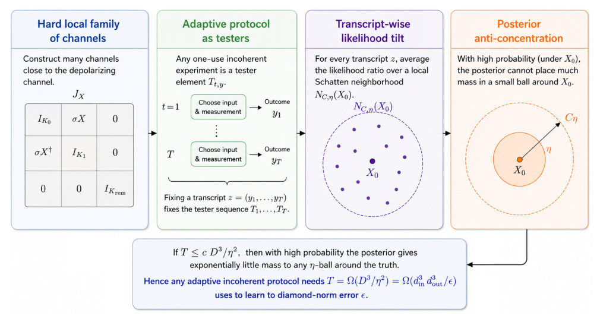
<figcaption class="paper-figure-caption"><b>Fig 1.</b> Figure 1. Overview of the proof strategy. We first construct a local family of channels near the completely depolarizing channel. Each channel is indexed by a matrix perturbation of the normalized Choi operator. We then represent every round of an adaptive incoherent protocol by a single-round tester. Along any transcript, the adaptivity protocol yields a deterministic sequence of tester elements. The key technical ingredient is a transcript-wise likelihood tilt bound over local Schatten neighborhoods, which yields posterior anti-concentration: after fewer than order d3 ind3 out/ε2 channel uses, the posterior cannot concentrate in the Choi trace ball that would be forced by any diamond-norm...</figcaption>
</figure>
</div>

<p><strong>Summary.</strong> This paper rigorously proves that utilizing quantum memory offers a significant computational advantage in Quantum Process Tomography (QPT). It establishes that protocols without memory require query complexity scaling as $d_{in}^3 d_{out}^3/\varepsilon^2$, while those with memory achieve a much better scaling of $d_{in}^2 d_{out}^2/\varepsilon^2$. This separation quantifies the necessity and power of quantum coherence in characterizing unknown quantum channels.</p>
<p><strong>Why it may be interesting.</strong> This work provides fundamental resource quantification for quantum characterization tasks, directly impacting the feasibility limits of experimental quantum computing hardware.</p>
<details>
<summary>Detailed structure</summary>
<p><strong>Main problem.</strong> The central problem is Quantum Process Tomography (QPT): learning an unknown quantum channel from black-box access.</p>
<p><strong>Main result.</strong> The paper establishes a rigorous separation between QPT protocols with and without quantum memory, showing that the required query complexity scales differently in both cases.</p>
<p><strong>Method.</strong> The authors use information-theoretic techniques, constructing local families of channels to derive lower bounds on sample complexity, which are matched by non-adaptive upper bounds.</p>
<p><strong>Model / system.</strong> The model involves an unknown quantum channel $\Phi: \mathcal{L}(A) 	o \mathcal{L}(B)$ acting between finite-dimensional Hilbert spaces $A$ and $B$. The comparison is drawn between protocols that use memory (coherent) versus those that reset after each measurement (incoherent).</p>
<p><strong>Key observables.</strong> The estimation error is measured in the diamond norm ($\|\cdot\|_{\diamond}$), and the complexity is quantified by the required number of queries ($T$).</p>
<p><strong>Important parameters / regimes.</strong> Dimensions $d_{\mathrm{in}}$ and $d_{\mathrm{out}}$, and the target accuracy $\varepsilon$. The scaling difference between memory-assisted ($\Theta(d_{in}^2 d_{out}^2/\varepsilon^2)$) and non-memory protocols ($\Theta(d_{in}^3 d_{out}^3/\varepsilon^2)$) is key.</p>
<p><strong>Assumptions / limitations.</strong> The analysis assumes finite-dimensional Hilbert spaces and focuses on classical adaptivity for the incoherent case, while the coherent case utilizes quantum memory.</p>
<p><strong>Figures summary.</strong> Figure 1 provides an overview of the proof strategy, linking local channel families to single-round testers and culminating in a likelihood-ratio estimate leading to the lower bound $T = \Omega(d_{in}^3 d_{out}^3 / \epsilon^2)$.</p>
<p><strong>Paper structure.</strong> The paper develops necessary mathematical tools (e.g., random-basis reconstruction, concentration inequalities) before applying them to establish a lower bound for adaptive incoherent protocols, which is then matched by an upper bound.</p>
</details>
<details>
<summary>Abstract</summary>
<p>Quantum process tomography, the task of learning an unknown quantum channel from black-box access, is a central problem in quantum information. In this setting, protocols with quantum memory can coherently store and jointly process quantum information obtained from multiple channel uses, whereas protocols without quantum memory must measure after each use and retain only a classical transcript of the measurement outcomes. A fundamental open question is whether quantum memory provides a query-complexity advantage even when protocols without quantum memory may adapt their experiments based on all previous outcomes with unbounded classical computational power. In this work, we show that it does. We determine the optimal query complexity of quantum process tomography without quantum memory up to a constant factor to be $Θ(d_{\mathrm{in}}^3 d_{\mathrm{out}}^3/\varepsilon^2)$, where $d_{\mathrm{in}}$ and $d_{\mathrm{out}}$ are the channel input and output dimensions, respectively, and $\varepsilon$ is the target diamond-norm accuracy. More precisely, we prove that any incoherent protocol for this task, including adaptive protocols, requires $Ω(d_{\mathrm{in}}^3 d_{\mathrm{out}}^3/\varepsilon^2)$ queries, even when each channel use may be assisted by arbitrary fresh ancilla, and we present a non-adaptive, ancilla-free incoherent protocol achieving the matching upper bound $O(d_{\mathrm{in}}^3 d_{\mathrm{out}}^3/\varepsilon^2)$. Our results thereby generalize the optimal sample-complexity bounds for single-copy state tomography, recovered as the special case $d_{\mathrm{in}}=1$. By contrast, coherent protocols with quantum memory achieve query complexity $Θ(d_{\mathrm{in}}^2 d_{\mathrm{out}}^2/\varepsilon^2)$. Hence, our results establish a rigorous learning separation between quantum process tomography with and without quantum memory.</p>
</details>
<p><sub><a href="#top">↑ back to top</a></sub></p>

<p><a id="paper-2607.13422"></a></p>
<h3 id="suppressing-detuning-induced-bias-in-ramsey-magnetometry-with-composite-pulses"><a href="http://arxiv.org/abs/2607.13422v1">Suppressing Detuning-Induced Bias in Ramsey Magnetometry with Composite Pulses</a></h3>
<p><strong>Authors:</strong> Shingo Kukita, Kento Nawata, Yuichiro Matsuzaki<br>
<strong>Type:</strong> theory · <strong>Category:</strong> other · <strong>PDF:</strong> <a href="https://arxiv.org/pdf/2607.13422v1">https://arxiv.org/pdf/2607.13422v1</a><br>
<strong>Analysis basis:</strong> full PDF text, analyzed in chunks
<strong>Topic relevance:</strong> <code>spintronics-quantum-optics interface</code> <strong>3/5</strong> · <code>QC/QI experiment</code> <strong>2/5</strong> · <code>quantum measurements</code> <strong>2/5</strong> · <code>exotic spin models in light-matter</code> <strong>1/5</strong></p>
<div class="figure-strip-hint">↔ Scroll figures horizontally</div>
<div class="paper-figures-scroll">
<figure class="paper-figure-card">
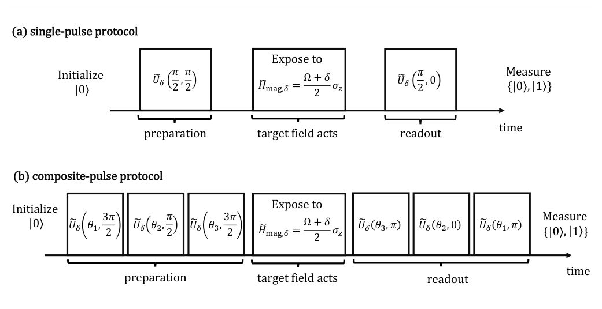
<figcaption class="paper-figure-caption"><b>Fig 1.</b> FIG. 1. Schematic of the two protocols. (a) In the single-pulse protocol, a π/2 pulse prepares an equal superposition, the qubit is exposed to the field for a time t, and a second π/2 pulse maps the accumulated phase onto the populations, which are read out in the {|0⟩, |1⟩} basis. (b) In the composite-pulse protocol, each π/2 pulse is replaced by a three-pulse sequence with areas θ1, θ2, θ3 and phases chosen to cancel the detuning to first order.</figcaption>
</figure>
<figure class="paper-figure-card">
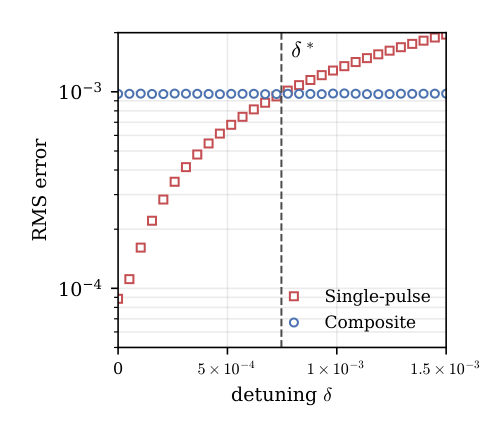
<figcaption class="paper-figure-caption"><b>Fig 2.</b> FIG. 2. Monte Carlo RMS error versus a detuning δ common to all measurements at γ = 0.1. The simulation parame- ters are Ω= 3 × 10−4, λ = 1, and total experimental time T = 2 × 108, corresponding to MSP = ⌊T/τSP⌋= 20508008 and MCP = ⌊T/τCP⌋= 6301769, with single-pulse expo- sure time tSP = 6.611 and composite-pulse exposure time tCP = 2(1 + √</figcaption>
</figure>
<figure class="paper-figure-card">
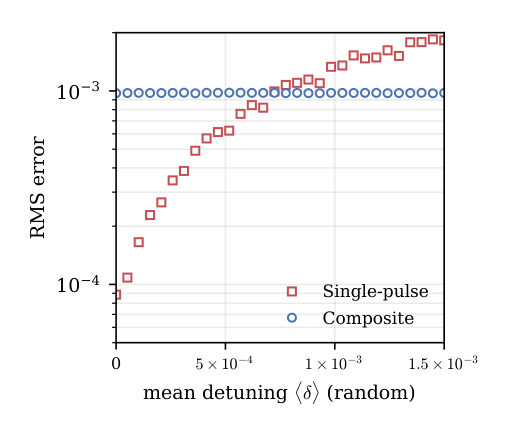
<figcaption class="paper-figure-caption"><b>Fig 3.</b> FIG. 3. Monte Carlo RMS error for a detuning that drifts on a long time scale at γ = 0.1. The MX measurements are split into 100 blocks of ⌊MX/100⌋each, and each block is assigned a detuning drawn uniformly over [0, δmax]. The horizontal axis is the mean detuning ⟨δ⟩= δmax/2. The single-pulse error (red) rises while the composite-pulse error (blue) stays flat, and the crossover sits near the threshold of Fig. 2.</figcaption>
</figure>
</div>

<p><strong>Summary.</strong> The paper tackles the problem of systematic error bias in Ramsey magnetometry caused by unknown frequency detuning. By designing and analyzing a specialized composite-pulse sequence, the authors successfully cancel this first-order detuning bias. This demonstrates a robust method to maintain high measurement precision close to the theoretical Standard Quantum Limit.</p>
<p><strong>Why it may be interesting.</strong> This work directly addresses systematic errors in quantum sensing protocols using coherent control techniques (composite pulses), which is highly relevant for improving precision measurements in AMO physics platforms like trapped ions or superconducting qubits.</p>
<details>
<summary>Detailed structure</summary>
<p><strong>Main problem.</strong> The primary goal is to suppress systematic estimation bias in Ramsey magnetometry caused by an unknown detuning ($\delta$) between the actual and nominal spin frequencies.</p>
<p><strong>Main result.</strong> A composite-pulse sequence was constructed that cancels the first-order detuning bias, allowing the measurement precision to approach the Standard Quantum Limit (SQL) even when $\delta$ is significant.</p>
<p><strong>Method.</strong> The authors analyzed state evolution by expanding effects to first order in $\delta$ and designed specific pulse sequences whose Hamiltonian contributions cancel out the linear detuning error term.</p>
<p><strong>Model / system.</strong> The system involves single-qubit Ramsey magnetometry of a DC magnetic field using spin probes. The dynamics are governed by an effective Hamiltonian that includes both the sensing field ($\Omega$) and the systematic detuning ($\delta$).</p>
<p><strong>Key observables.</strong> Outcome probability ($P_0$), estimated frequency ($  ilde{\Omega}$), Mean-Square Error (MSE), and the bias term ($b$).</p>
<p><strong>Important parameters / regimes.</strong> Detuning ($\delta$), sensing field strength ($\Omega$), exposure time ($t$), and measurement count ($M$). The analysis focuses on the regime $\Omega t \ll 1$.</p>
<p><strong>Assumptions / limitations.</strong> The analysis relies on expanding effects to first order in $\delta$, and for some parts, it assumes depolarizing noise ($\gamma$) is known.</p>
<p><strong>Figures summary.</strong> Figures compare single-pulse (error rising with detuning) versus composite-pulse protocols (error remaining flat), demonstrating the suppression of bias as detuning increases.</p>
<p><strong>Paper structure.</strong> The paper first analyzes the standard single-pulse protocol, deriving the linear bias proportional to $\delta$. It then introduces and derives a composite-pulse sequence designed specifically to cancel this leading-order detuning contribution, restoring performance towards the SQL limit.</p>
</details>
<details>
<summary>Abstract</summary>
<p>Quantum sensing estimates a physical parameter encoded in the state of a probe; with independent spin probes the precision follows the standard quantum limit. Studies of sensing precision often assume that the parameters entering the model, such as the noise, are known. In practice these parameters are not always known, and a mismatch between the assumed and actual values induces a systematic error. Here we study single-qubit Ramsey magnetometry of a DC magnetic field under an unknown detuning between the actual and nominal spin frequencies: A first pulse puts the qubit into a superposition of its two states, the field to be sensed then adds a relative phase during an exposure stage, and a second pulse enables the readout. In our setting, the field acts only during the exposure stage, whereas the detuning acts throughout the whole protocol. We analyze how the detuning biases the estimate, preventing the total estimation error from following the standard quantum limit. We then construct a composite-pulse preparation and readout that exploits the difference in the intervals over which the field and the detuning act to cancel the detuning to first order. We evaluate the performance of this composite-pulse protocol and show that it suppresses the detuning-induced bias.</p>
</details>
<p><sub><a href="#top">↑ back to top</a></sub></p>

<p><a id="paper-2607.13291"></a></p>
<h3 id="a-measurement-plane-for-quantum-networking"><a href="http://arxiv.org/abs/2607.13291v1">A Measurement Plane for Quantum Networking</a></h3>
<p><strong>Authors:</strong> Abderrahim Amlou, Amar Abane, Anouar Rahmouni, Mheni Merzouki, Abdella Battou, Ahmed Lbath, Ya-Shian Li-Baboud, Oliver Slattery, Thomas Gerrits<br>
<strong>Type:</strong> experiment · <strong>Category:</strong> quantum information and computing · <strong>PDF:</strong> <a href="https://arxiv.org/pdf/2607.13291v1">https://arxiv.org/pdf/2607.13291v1</a><br>
<strong>Analysis basis:</strong> full PDF text, analyzed in chunks
<strong>Topic relevance:</strong> <code>quantum measurements</code> <strong>3/5</strong> · <code>quantum optics experiment</code> <strong>2/5</strong> · <code>QC/QI experiment</code> <strong>1/5</strong> · <code>measurement-induced transitions</code> <strong>1/5</strong></p>
<div class="figure-strip-hint">↔ Scroll figures horizontally</div>
<div class="paper-figures-scroll">
<figure class="paper-figure-card">
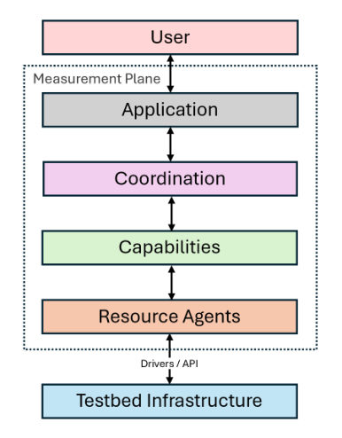
<figcaption class="paper-figure-caption"><b>Fig 1.</b> Fig. 1. Layered architecture of the Measurement Plane.</figcaption>
</figure>
<figure class="paper-figure-card">
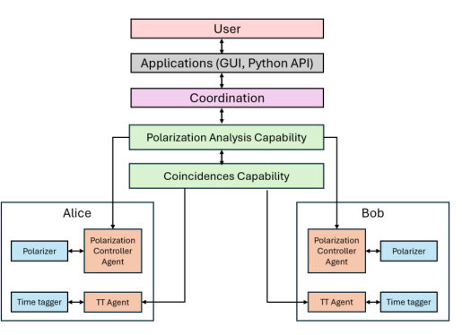
<figcaption class="paper-figure-caption"><b>Fig 2.</b> Fig. 2. Software interaction model of the Measurement Plane during experi- ment execution.</figcaption>
</figure>
<figure class="paper-figure-card">
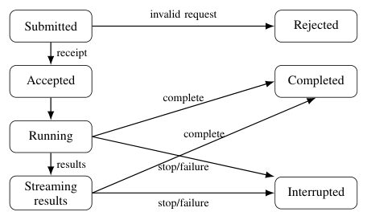
<figcaption class="paper-figure-caption"><b>Fig 3.</b> Fig. 3. Measurement lifecycle within the Measurement Plane. After sub- mission, a request is either rejected or admitted for execution. Running measurements may produce status updates and result streams until completion or interruption.</figcaption>
</figure>
<figure class="paper-figure-card">
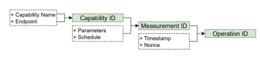
<figcaption class="paper-figure-caption"><b>Fig 4.</b> Fig. 4. Identifier hierarchy used in the Measurement Plane.</figcaption>
</figure>
<figure class="paper-figure-card">
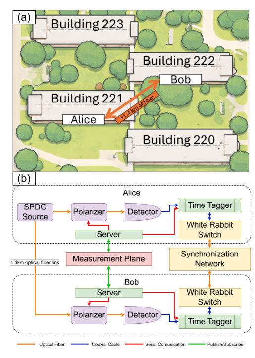
<figcaption class="paper-figure-caption"><b>Fig 5.</b> Fig. 5. Experimental setup used to evaluate the Measurement Plane. (a) Physical deployment of the experiment across the NIST campus, showing the optical path between Building 221 (Alice) and Building 222 (Bob). The two nodes are connected through approximately 1.4 km of deployed optical fiber. (b) Experimental architecture at both nodes. At Alice, a spontaneous parametric down-conversion (SPDC) source generates photons that are mea- sured locally and sent through the fiber link to Bob. Each node includes polarization analysis and single-photon detection, with time-tagged detection events collected by a time tagger synchronized through the White Rabbit network. Local servers host resource...</figcaption>
</figure>
</div>

<p><strong>Summary.</strong> The paper introduces the Measurement Plane, a modular, distributed framework designed to standardize and automate data collection across heterogeneous quantum networking testbeds. By separating user workflows from low-level hardware control into distinct software layers, it enables complex, multi-step quantum experiments remotely. This significantly reduces manual configuration effort while maintaining high experimental fidelity.</p>
<p><strong>Why it may be interesting.</strong> This work provides a crucial software infrastructure layer for realizing complex quantum network protocols, abstracting away device heterogeneity which is a major bottleneck in experimental quantum information science.</p>
<details>
<summary>Detailed structure</summary>
<p><strong>Main problem.</strong> Quantum networking testbeds lack a distinct, standardized plane for coordinating distributed measurements and collecting experimental data across heterogeneous quantum devices.</p>
<p><strong>Main result.</strong> The proposed Measurement Plane successfully coordinated remote nodes to execute complex experiments like coincidence measurement and polarization entanglement distribution with high visibility (up to 98%).</p>
<p><strong>Method.</strong> A distributed framework using containerized microservices connected via publish-subscribe messaging was implemented, organizing functions into four distinct layers.</p>
<p><strong>Model / system.</strong> The system is a software architecture designed for quantum networking testbeds, involving two remote nodes (Alice and Bob) connected by an optical network. It separates user workflows from device-specific control using capability abstraction.</p>
<p><strong>Key observables.</strong> Visibility interference of up to 98% in polarization entanglement distribution; coincidence detection peaks at zero delay.</p>
<p><strong>Important parameters / regimes.</strong> Two-node quantum networking setup; $\approx 1.4$ km optical fiber link.</p>
<p><strong>Assumptions / limitations.</strong> The architecture assumes communication via a shared messaging infrastructure (NATS) and demonstrates feasibility rather than ultimate scale limits.</p>
<p><strong>Figures summary.</strong> Figures illustrate the layered architecture, the measurement lifecycle (Submission to Completion), the identifier hierarchy used for tracking, and experimental results showing coincidence histograms and polarization fringe visibility.</p>
<p><strong>Paper structure.</strong> The paper introduces the Measurement Plane concept, details its multi-layered distributed microservice architecture (Application $
ightarrow$ Coordination $
ightarrow$ Capability $
ightarrow$ Resource Agent), describes the identification scheme, and validates it through automated execution of remote quantum experiments.</p>
</details>
<details>
<summary>Abstract</summary>
<p>Quantum networking testbeds lack a distinct plane for coordinating distributed measurements and collecting experimental data across heterogeneous devices. To address this gap, we present the Measurement Plane, a dedicated plane that complements the data, control, and management planes rather than replacing or extending their pipelines. The contribution is presented as a distributed framework that organizes measurement functions into four layers: application, experiment coordination, capability, and resource agents. Our design separates user workflows from device-specific control.   We implemented the framework as containerized microservices connected through publish--subscribe messaging, and validated it on a two-node quantum networking setup connected by an optical network. The framework successfully coordinated remote nodes to execute coincidence measurement and polarization entanglement distribution experiments with visibility interference of up to 98 percent. This evaluation demonstrated the effectiveness of the framework for supporting complex, distributed quantum experiments, enabling online measurement and feedback, and significantly reducing manual configuration and execution effort.</p>
</details>
<p><sub><a href="#top">↑ back to top</a></sub></p>

<p><a id="paper-2607.13400"></a></p>
<h3 id="dirac-topology-anomalous-hall-response-and-giant-magnetoresistance-in-carrier-compensated-altermagnetic-semimetal-nis"><a href="http://arxiv.org/abs/2607.13400v1">Dirac topology, anomalous Hall response, and giant magnetoresistance in carrier-compensated altermagnetic semimetal NiS</a></h3>
<p><strong>Authors:</strong> Shovan Gayen, Sk. Soyeb Ali, S K Panda<br>
<strong>Type:</strong> theory · <strong>Category:</strong> strongly correlated electrons · <strong>PDF:</strong> <a href="https://arxiv.org/pdf/2607.13400v1">https://arxiv.org/pdf/2607.13400v1</a><br>
<strong>Analysis basis:</strong> full PDF text, analyzed in chunks
<strong>Topic relevance:</strong> <code>spintronics-quantum-optics interface</code> <strong>3/5</strong> · <code>Keldysh / 2PI / non-Gaussian methods</code> <strong>1/5</strong> · <code>analog quantum simulation</code> <strong>1/5</strong> · <code>exotic spin models in light-matter</code> <strong>1/5</strong> · <code>non-equilibrium dynamics</code> <strong>1/5</strong></p>
<div class="figure-strip-hint">↔ Scroll figures horizontally</div>
<div class="paper-figures-scroll">
<figure class="paper-figure-card">

<figcaption class="paper-figure-caption"><b>Fig 1.</b> FIG. 1. (a),(f) Band dispersion along the Γ–K–M–L–A–H path using LSDA+U and LSDA+U+SOC approaches. (b)–(e) Orbital-projected band structures near the Dirac-like crossings (α, β, γ, δ) along K, A, and L–A. (g)–(j) Corresponding SOC-included orbital projected bands showing lifting of degeneracies. Colored bands denote a1g, e2g, and e1g characters. Fermi energy (EF) is set at 0 eV.</figcaption>
</figure>
<figure class="paper-figure-card">

<figcaption class="paper-figure-caption"><b>Fig 2.</b> FIG. 2. Spin-resolved band dispersions along the (a) L–Γ–¯L and (b) M–A– ¯M directions are shown, revealing the characteristic momentum-dependent spin splitting of the altermagnetic state. The Spin-resolved constant-energy contours at E −EF = −0.25 eV in the (c) kx–ky and (d) kx–kz (or ky-kz) planes passing through the vicinity of the A point, respectively.</figcaption>
</figure>
<figure class="paper-figure-card">

<figcaption class="paper-figure-caption"><b>Fig 3.</b> FIG. 4. (a) Fermi surface (FS) in the hexagonal Brillouin zone, with corresponding cross-sectional cuts in the (b) kz = 0 and (c) kz = π planes. Magnetic-field (B) dependence of (d) Hall resistivity ρzx, (e) longitudinal resistivity ρzz, and (f) magnetoresistance MRzz. Insets in (d)–(f) show ρxy, ρxx, and MRxx, respectively.</figcaption>
</figure>
<figure class="paper-figure-card">

<figcaption class="paper-figure-caption"><b>Fig 4.</b> FIG. 3. Energy (chemical potential) dependence of the (a) SHC and (b) AHC tensor components. (c) Band structure projected with spin Berry curvature (log scale) and (d) k-resolved spin Berry curvature at E = EF.</figcaption>
</figure>
<figure class="paper-figure-card">

<figcaption class="paper-figure-caption"><b>Fig 5.</b> FIG. 5. (a) A-type antiferromagnetic structure of NiS illustrating the dominant exchange interactions J1, J2, and J3 (only Ni ions are shown for clarity). (b) Calculated magnetic specific heat as a func- tion of temperature, displaying a pronounced anomaly at the Néel temperature TN ≈446 K.</figcaption>
</figure>
</div>

<p><strong>Summary.</strong> This work theoretically characterizes NiS as a unique 3d altermagnetic semimetal where topology, magnetism, and lattice effects are intrinsically linked. By combining advanced DFT methods with transport theory, the authors predict large intrinsic spin Hall and anomalous Hall responses alongside giant magnetoresistance. The findings establish NiS as a promising material platform for realizing multiple quantum functionalities simultaneously.</p>
<p><strong>Why it may be interesting.</strong> While focused on condensed matter magnetism, the strong reliance on topological invariants (Berry curvature) and emergent quantum responses (AHC/SHC) connects deeply with modern theoretical approaches used in AMO physics for characterizing engineered quantum states.</p>
<details>
<summary>Detailed structure</summary>
<p><strong>Main problem.</strong> Investigating the complex interplay between electronic topology, magnetism, and lattice dynamics in a specific magnetic semimetal.</p>
<p><strong>Main result.</strong> NiS is identified as a model 3d platform exhibiting simultaneous carrier compensation, altermagnetic symmetry, large intrinsic spin Hall conductivity, and finite anomalous Hall response.</p>
<p><strong>Method.</strong> The study combines first-principles DFT (LSDA+U+SOC), Berry-curvature analysis, semiclassical Boltzmann transport, and atomistic spin dynamics simulations.</p>
<p><strong>Model / system.</strong> The physical system is hexagonal nickel sulfide (NiS), modeled as a carrier-compensated 3d altermagnetic semimetal with an A-type antiferromagnetic order. The electronic structure is analyzed using crystal field theory derived from the NiAs lattice symmetry.</p>
<p><strong>Key observables.</strong> Intrinsic spin Hall conductivity ($\sigma^{\gamma}_{\alphaeta}$), anomalous Hall conductivity (AHC), nonsaturating magnetoresistance ($>10000\%$), and momentum-dependent spin splitting.</p>
<p><strong>Important parameters / regimes.</strong> The magnetic transition temperature ($T_t \simeq 265	ext{K}$) and the magnitude of the spin splitting ($\sim 0.4$ to $1.0$ eV) are key parameters.</p>
<p><strong>Assumptions / limitations.</strong> The analysis relies on DFT calculations using the LSDA+U+SOC approach, assuming its validity for describing the magnetic ground state and electronic structure.</p>
<p><strong>Figures summary.</strong> Figures illustrate band dispersions showing SOC-induced splitting (Fig. 1, 2), energy dependence of transport coefficients (SHC/AHC in Fig. 3), and the calculation of magnetic exchange interactions ($J_1, J_2, J_3$ in Fig. 5).</p>
<p><strong>Paper structure.</strong> The paper proceeds by establishing the electronic structure via DFT, analyzing symmetry constraints leading to Dirac crossings (crystal field analysis), calculating transport properties using Berry curvature methods, and finally determining magnetic exchange interactions.</p>
</details>
<details>
<summary>Abstract</summary>
<p>We combine first-principles density-functional theory, Berry-curvature analysis, semiclassical Boltzmann transport, and atomistic spin dynamics to establish hexagonal NiS as a compensated 3d altermagnetic semimetal in which topology, magnetism, and lattice dynamics are intrinsically intertwined. The rotational coset symmetry of the NiAs lattice produces momentum-dependent spin splitting characteristic of altermagnetism. With spin-orbit coupling, gapped Dirac-like crossings generate intense Berry-curvature hot spots and nearly compensated electron-hole pockets. This leads to a large and anisotropic intrinsic spin Hall conductivity comparable to that of several 4d, 5d metals, a symmetry-allowed anomalous Hall response despite zero net magnetization, and nonsaturating magnetoresistance exceeding 10000 percent. On the magnetic side, first-principles determination of the exchange tensor reveals dominant long-range superexchange and sizable anisotropic interactions, quantitatively reproducing the experimental Neel temperature. Our results identify NiS as a model 3d platform in which carrier compensation, altermagnetic symmetry, Berry-curvature driven transport, and lattice-sensitive magnetism coexist within a single symmetry framework, offering a design principle for multi-functional quantum responses in correlated transition-metal compounds.</p>
</details>
<p><sub><a href="#top">↑ back to top</a></sub></p>

<p><a id="paper-2607.13434"></a></p>
<h3 id="hubbard-assisted-stability-of-hatsugai-kohmoto-correlations-in-a-one-dimensional-open-chain"><a href="http://arxiv.org/abs/2607.13434v1">Hubbard-assisted stability of Hatsugai-Kohmoto correlations in a one-dimensional open chain</a></h3>
<p><strong>Authors:</strong> Yan-Xiao Wang, Yin Zhong<br>
<strong>Type:</strong> theory · <strong>Category:</strong> strongly correlated electrons · <strong>PDF:</strong> <a href="https://arxiv.org/pdf/2607.13434v1">https://arxiv.org/pdf/2607.13434v1</a><br>
<strong>Analysis basis:</strong> full PDF text, analyzed in chunks
<strong>Topic relevance:</strong> <code>analog quantum simulation</code> <strong>3/5</strong> · <code>Kondo &amp; dissipative impurity</code> <strong>1/5</strong> · <code>entanglement &amp; information structure</code> <strong>1/5</strong> · <code>exotic spin models in light-matter</code> <strong>1/5</strong> · <code>non-equilibrium dynamics</code> <strong>1/5</strong></p>
<div class="figure-strip-hint">↔ Scroll figures horizontally</div>
<div class="paper-figures-scroll">
<figure class="paper-figure-card">

<figcaption class="paper-figure-caption"><b>Fig 1.</b> FIG. 1: Finite-size dependence of the NN spin correlation CS(1) in the HK-only model at UHK = 5t, comparing OBC and PBC.</figcaption>
</figure>
<figure class="paper-figure-card">

<figcaption class="paper-figure-caption"><b>Fig 2.</b> FIG. 3: Spin-spin correlation function CS(γ) for the HK-only and Hubbard-only models at selected interaction strengths. Solid lines denote the HK-only results with UHK = U, while dashed lines denote the Hubbard-only results with UHub = U. The shaded regions highlight the difference between the two curves.</figcaption>
</figure>
<figure class="paper-figure-card">

<figcaption class="paper-figure-caption"><b>Fig 3.</b> FIG. 2: Finite-size dependence of CS(1) in the HK+Hubbard model at UHK = 5t and UHub = 10−3t, comparing OBC and PBC.</figcaption>
</figure>
<figure class="paper-figure-card">

<figcaption class="paper-figure-caption"><b>Fig 4.</b> FIG. 4: CS(γ) at fixed UHK = 2t. Solid black lines show the HK-only reference result, while blue dotted lines show the HK+Hubbard results for the indicated UHub.</figcaption>
</figure>
<figure class="paper-figure-card">

<figcaption class="paper-figure-caption"><b>Fig 5.</b> FIG. 5: Spin-correlation map in the (UHub, UHK) plane for the half-filled Lx = 8 open chain. The blue line de- notes the boundary defined by CS(1) = 0, beyond which the intersite spin correlations become positive. The red line denotes the boundary of the nearly saturated regime, where CS(γ) ≃1/4 for γ ≥1. Orange diamonds are extrapolated boundary values at large UHub. The inset shows these extrapolated red-boundary values on a log- log scale, fitted by Uc HK ∝(UHub)−α with α = 0.99. This fit is used only as an empirical guide to the large-UHub trend.</figcaption>
</figure>
</div>

<p><strong>Summary.</strong> This paper explores the stability of Hatsugai-Kohmoto (HK) correlations in a 1D spinful chain when an onsite Hubbard repulsion is added. Using exact diagonalization, the authors find that this local interaction actively reinforces the HK physics rather than disrupting it. The results emphasize that the spatial structure of the repulsive term critically determines its effect on the correlated ground state.</p>
<p><strong>Why it may be interesting.</strong> This work provides nonperturbative real-space insights into correlated electron physics, showing how local interactions can stabilize or modify exotic quantum phases like those described by the HK fixed point, which is relevant for understanding Mott insulators.</p>
<details>
<summary>Detailed structure</summary>
<p><strong>Main problem.</strong> The study investigates how adding a finite onsite Hubbard repulsion modifies the established Hatsugai-Kohmoto (HK) physics in real-space observables and local spectra, moving beyond weak perturbation theory.</p>
<p><strong>Main result.</strong> The onsite Hubbard interaction actively reinforces the HK-dominated regime, leading to a 'Hubbard-assisted strong-HK response' observed across spin correlations and spectral weight redistribution. This enhancement is highly sensitive to the spatial structure of the added repulsion compared to nearest-neighbor interactions.</p>
<p><strong>Method.</strong> The research employs exact diagonalization (ED) calculations on an open chain system, supplemented by Lanczos continued-fraction methods for calculating local density of states (LDOS).</p>
<p><strong>Model / system.</strong> The model is a half-filled one-dimensional spinful fermion chain governed by a Hamiltonian incorporating hopping, the HK interaction ($U_{	ext{HK}}$), and an onsite Hubbard repulsion ($U_{	ext{Hub}}$). Comparisons are made against nearest-neighbor (NN) interactions.</p>
<p><strong>Key observables.</strong> Ground-state correlation functions (spin $\langle S \cdot S 
angle$, single-particle $\langle c^\dagger c 
angle$), Local Density of States (LDOS), and pairing correlations ($\Delta$).</p>
<p><strong>Important parameters / regimes.</strong> Interaction strengths ($U_{	ext{HK}}$, $U_{	ext{Hub}}$) relative to hopping ($t$); the system is studied in the half-filled limit, with comparisons made at finite doping.</p>
<p><strong>Assumptions / limitations.</strong> Calculations are performed on finite open chains; the analysis relies on comparing results from different interaction types (onsite vs. nearest-neighbor).</p>
<p><strong>Figures summary.</strong> Figures compare spin and single-particle correlations for HK-only, Hubbard-only, and mixed models across varying coupling strengths, showing how $U_{	ext{Hub}}$ shifts the system towards strong-HK behavior, while NN interactions show competing tendencies.</p>
<p><strong>Paper structure.</strong> The paper systematically analyzes the effect of onsite repulsion by comparing it to the pure HK model, contrasting this with a nearest-neighbor interaction. Key diagnostics include correlation functions and impurity-induced spectral weight transfer.</p>
</details>
<details>
<summary>Abstract</summary>
<p>The Hatsugai-Kohmoto (HK) model has recently been identified as a fixed-point description of Mottness that is stable against perturbing local interactions. This raises a natural question beyond the weak-perturbation regime: how does a finite local repulsion modify HK physics in real-space observables and local spectra? We address this question in a half-filled one-dimensional spinful fermion chain, where the HK interaction is supplemented by an onsite Hubbard repulsion. Using exact diagonalization in an open chain, we compute ground-state correlation functions and site-resolved local spectra. We find that the Hubbard term does not drive the system away from the HK-dominated regime. Instead, at moderate $U_{\rm HK}$, a finite $U_{\rm Hub}$ promotes the emergence of behavior characteristic of the pure HK chain at larger $U_{\rm HK}$. This Hubbard-assisted strong-HK response is reflected consistently in the development of positive spin correlations, the suppression of single-particle coherence, the impurity-induced redistribution of local spectral weight, and the evolution of pairing correlations. As a control perturbation, we replace the onsite Hubbard interaction by a nearest-neighbor (NN) density interaction. In contrast to the Hubbard case, the HK and NN interactions display competing tendencies and do not reproduce the same strong-HK behavior. These results provide a nonperturbative real-space complement to the fixed-point stability of HK physics and show that the effect of an additional repulsive interaction depends sensitively on its spatial structure.</p>
</details>
<p><sub><a href="#top">↑ back to top</a></sub></p>

<p><a id="paper-2607.13675"></a></p>
<h3 id="stoner-transitions-beyond-mean-field-in-two-dimensional-electronic-systems-a-diagrammatic-monte-carlo-study"><a href="http://arxiv.org/abs/2607.13675v1">Stoner transitions beyond mean-field in two-dimensional electronic systems: a diagrammatic Monte Carlo study</a></h3>
<p><strong>Authors:</strong> Yueh-Chen Lee, Nikolay P. Prokof'ev, Andrey V. Chubukov<br>
<strong>Type:</strong> theory · <strong>Category:</strong> strongly correlated electrons · <strong>PDF:</strong> <a href="https://arxiv.org/pdf/2607.13675v1">https://arxiv.org/pdf/2607.13675v1</a><br>
<strong>Analysis basis:</strong> full PDF text, analyzed in chunks
<strong>Topic relevance:</strong> <code>methods for driven-dissipative</code> <strong>3/5</strong> · <code>analog quantum simulation</code> <strong>2/5</strong> · <code>Keldysh / 2PI / non-Gaussian methods</code> <strong>1/5</strong> · <code>driven-dissipative phase transition</code> <strong>1/5</strong></p>
<div class="figure-strip-hint">↔ Scroll figures horizontally</div>
<div class="paper-figures-scroll">
<figure class="paper-figure-card">

<figcaption class="paper-figure-caption"><b>Fig 1.</b> FIG. 1. Phase diagrams of single-valley systems with a parabolic dispersion with kF = 0.1 (panel (a)) and k6 dispersion</figcaption>
</figure>
<figure class="paper-figure-card">

<figcaption class="paper-figure-caption"><b>Fig 2.</b> FIG. 2. Phase diagram of a two-valley system with an isotropic dispersion relation (panel (a) ), and elliptic dispersion</figcaption>
</figure>
<figure class="paper-figure-card">

<figcaption class="paper-figure-caption"><b>Fig 3.</b> FIG. 3. (a) Summation of the ladder diagrams. The second term is what we define as χ2PI. The quantity ψ plays the</figcaption>
</figure>
<figure class="paper-figure-card">

<figcaption class="paper-figure-caption"><b>Fig 4.</b> FIG. 4. The two-particle irreducible four point function K to second order in U0. The last two Aslamazov-Larkin</figcaption>
</figure>
<figure class="paper-figure-card">

<figcaption class="paper-figure-caption"><b>Fig 5.</b> FIG. 5. Ladder diagrams for the spin susceptibility in a Fermi-liquid theory. The black-shaded area is the side vertex Λ,</figcaption>
</figure>
</div>

<p><strong>Summary.</strong> This paper rigorously examines Stoner transitions in 2D electronic materials by moving beyond mean-field approximations using a Diagrammatic Monte Carlo simulation. The study reveals that the nature of magnetic ordering—whether it occurs, and through what sequence of phases—is highly dependent on the number of valleys and the anisotropy of the underlying electron dispersion. It provides crucial insights into correlated magnetism in low-dimensional quantum materials.</p>
<p><strong>Why it may be interesting.</strong> While focused on condensed matter magnetism, the use of diagrammatic Monte Carlo techniques for strongly correlated electron systems provides sophisticated computational tools applicable to other many-body quantum problems where perturbative expansions fail.</p>
<details>
<summary>Detailed structure</summary>
<p><strong>Main problem.</strong> The study investigates Stoner instabilities in two-dimensional electronic systems, going beyond the limitations of mean-field theory.</p>
<p><strong>Main result.</strong> In one-valley systems, ferromagnetism only occurs if momentum transfer is cut off; for two-valley systems, the transition can be direct or proceed through an intermediate valley-polarized state, controlled by dispersion anisotropy.</p>
<p><strong>Method.</strong> The authors employ a diagrammatic Monte Carlo (DiagMC) algorithm to treat both ladder and non-ladder renormalizations on equal footing in the susceptibility calculation.</p>
<p><strong>Model / system.</strong> The system models 2D electronic systems with one or two valleys, described by Hamiltonians including kinetic terms and repulsive interactions. The analysis considers parabolic ($k^2$) and $k^6$ dispersions for single-valley cases, and elliptic dispersion for two-valley setups.</p>
<p><strong>Key observables.</strong> Stoner transition point (instability), order parameters like valley polarization (VP) and ferromagnetism (FM), and the static magnetic susceptibility ($\chi_s$).</p>
<p><strong>Important parameters / regimes.</strong> Dimensionless coupling constant $\lambda$, momentum cutoff $q^*$, and anisotropy factor $\eta$.</p>
<p><strong>Assumptions / limitations.</strong> The primary assumption is extending beyond mean-field theory by including higher-order diagrammatic corrections via the DiagMC method.</p>
<p><strong>Figures summary.</strong> Figures illustrate phase diagrams for single-valley and two-valley systems showing symmetry-breaking phases (e.g., VP, SVP) versus interaction parameters ($q^*$).</p>
<p><strong>Paper structure.</strong> The paper progresses from establishing the mean-field context to applying the advanced DiagMC technique to calculate susceptibilities beyond lowest order, culminating in detailed phase diagrams mapping out different magnetic/valley ordered states.</p>
</details>
<details>
<summary>Abstract</summary>
<p>Stoner instabilities for fermions with repulsive interaction have been well studied within the mean-field (ladder) approximation. In this study, we consider two-dimensional electronic systems with one or two valleys and discuss a Stoner transition beyond the ladder approximation. At weak coupling, the corrections to the ladder approximation come predominantly from the renormalization of the particle-hole vertex in the particle-particle channel, and the lowest-order corrections are logarithmically singular in the low-density limit. To investigate the problem beyond the lowest order, we apply the diagrammatic Monte Carlo algorithm and treat ladder and non-ladder renormalizations on equal footing. We find that in a one-valley system, a Stoner transition to a ferromagnetism occurs at low density only if there is a cutoff on the momentum transfer carried by the interaction. In a two-valley system, the restriction is less severe. Here we find either a direct Stoner transition into a spin- and valley-polarized state, or a set of two Stoner transitions via an intermediate valley-polarized state. The pathway is controlled by the anisotropy of the fermionic dispersion.</p>
</details>
<p><sub><a href="#top">↑ back to top</a></sub></p>

<p><a id="paper-2607.13198"></a></p>
<h3 id="an-information-theoretic-characterization-of-optimal-value-readout-in-response-register-quantum-oracles"><a href="http://arxiv.org/abs/2607.13198v1">An Information-Theoretic Characterization of Optimal Value-Readout in Response-Register Quantum Oracles</a></h3>
<p><strong>Authors:</strong> Milad Ghadimi, Hesam Soltanpanahi, Vahid Salari<br>
<strong>Type:</strong> theory · <strong>Category:</strong> quantum information and computing · <strong>PDF:</strong> <a href="https://arxiv.org/pdf/2607.13198v1">https://arxiv.org/pdf/2607.13198v1</a><br>
<strong>Analysis basis:</strong> full PDF text, analyzed in chunks
<strong>Topic relevance:</strong> <code>quantum measurements</code> <strong>3/5</strong> · <code>entanglement &amp; information structure</code> <strong>2/5</strong> · <code>measurement-induced transitions</code> <strong>1/5</strong></p>
<div class="figure-strip-hint">↔ Scroll figures horizontally</div>
<div class="paper-figures-scroll">
<figure class="paper-figure-card">

<figcaption class="paper-figure-caption"><b>Fig 1.</b> FIG. 1: Response-register oracle and its two operational interpretations. Top: A response-register oracle Of acts on a computational register |x⟩and a response state |η⟩by applying the translation Tf(x) determined by the oracle value f(x). Bottom left: In the value-oracle interpretation, the translated response states are measured to infer the oracle value. The optimal single-query value-readout probability is completely determined by the Fourier-weight distribution of the response state. Bottom Right: In the phase–oracle interpretation, the response register is initialized in a character state |χ0⟩, so that the oracle translation contributes only through the phase factor χ0 (f (x)) via...</figcaption>
</figure>
<figure class="paper-figure-card">

<figcaption class="paper-figure-caption"><b>Fig 2.</b> FIG. 2: Tight phase–value tradeoff, Eq. (6), for d ∈{2, 4, 16, 64}. The horizontal axis is the target-character phase fidelity Φχ0; the vertical axis is the optimal single-query value-readout probability Pval. Each curve is saturated by the response states in Eq. (8). Exact phase semantics occurs at Φχ0 = 1, where Pval = 1/d (bottom right); exact value readout occurs at Φχ0 = 1/d, where Pval = 1 (marked on each curve). Near the phase corner, Pval −1/d grows as O(√ϵ) in the phase infidelity ϵ = 1 −Φχ0.</figcaption>
</figure>
<figure class="paper-figure-card">

<figcaption class="paper-figure-caption"><b>Fig 3.</b> FIG. 3: Effective Fourier-support landscape for a three-dimensional Fourier-weight distribution (d = 3). Each point in the triangular simplex represents a Fourier-weight distribution p = (p1, p2, p3) satisfying p1 + p2 + p3 = 1. The color scale shows the effective</figcaption>
</figure>
<figure class="paper-figure-card">

<figcaption class="paper-figure-caption"><b>Fig 4.</b> FIG. 4: Phase–value capability map for a response-register dimension d = 16. The horizontal axis shows the target-character phase fidelity Φ = pχ0, while the vertical axis gives the optimal single-query value-readout probability Pval. The color scale represents the effective Fourier support, Seff = 2H1/2(p) = dPval, with white contour lines indicating selected constant-Seff levels. The solid black curve denotes the tight phase–value complementarity</figcaption>
</figure>
</div>

<p><strong>Summary.</strong> This work characterizes optimal value readout in response-register quantum oracles by proving that the achievable probability is exactly determined by the normalized Rényi-1/2 effective Fourier support of the state. This establishes an exact information-theoretic measure, providing a tight complementarity theorem between phase and value measurements for Abelian groups.</p>
<p><strong>Why it may be interesting.</strong> The rigorous mathematical connection between geometric properties (Fourier support) and operational limits ($P_{	ext{val}}$) provides a powerful, generalizable tool for analyzing quantum measurement protocols in structured settings.</p>
<details>
<summary>Detailed structure</summary>
<p><strong>Main problem.</strong> The paper aims to provide an exact, quantitative characterization of the relationship between two complementary operational interpretations—value readout and phase kickback—for response-register quantum oracles.</p>
<p><strong>Main result.</strong> It proves that for finite Abelian response groups, the optimal single-query value-readout probability is exactly equal to the normalized Rényi-1/2 effective Fourier support of the response state.</p>
<p><strong>Method.</strong> The analysis uses information theory, linking optimal quantum state discrimination (covariant measurements) to properties derived from the Fourier-weight distribution of the response state via group theory concepts.</p>
<p><strong>Model / system.</strong> The model is a response-register quantum oracle acting on a computational register and characterized by a finite Abelian response group $A$. The system's behavior is governed by the response state $|\eta
angle$ and its associated Fourier-weight distribution $p = (p_\chi)$.</p>
<p><strong>Key observables.</strong> Optimal single-query value-readout probability ($P_{	ext{val}}$), Rényi-1/2 effective Fourier support ($   ext{Seff}$), and target character phase fidelity ($\Phi$).</p>
<p><strong>Important parameters / regimes.</strong> The dimension of the response register, $d = |A|$, and the specific structure of the Abelian group $A$.</p>
<p><strong>Assumptions / limitations.</strong> The results are rigorously proven only for finite Abelian response groups; extensions to non-Abelian groups are suggested as future work.</p>
<p><strong>Figures summary.</strong> Figures illustrate the oracle's two interpretations (value readout vs. phase kickback), map out the achievable phase–value tradeoff region, and show the 'Effective Fourier-support landscape' relating $P_{	ext{val}}$ to the distribution $p$.</p>
<p><strong>Paper structure.</strong> The paper establishes a chain of correspondences: linking the operational limit ($P_{	ext{val}}$) through quantum state discrimination theory to an information-theoretic quantity ($  ext{Seff}$), which is defined via the R\'enyi-1/2 entropy of the Fourier weights.</p>
</details>
<details>
<summary>Abstract</summary>
<p>Response-register quantum oracles admit two complementary operational interpretations: value readout and phase kickback. Although their computational equivalence is well understood, the quantitative relation between these two operational interpretations has lacked an exact characterization. We prove that, for finite Abelian response groups, the optimal single-query value-readout probability is exactly the normalized Rényi-1/2 effective Fourier support of the response state. This identity provides an exact information-theoretic characterization of optimal value-readout capability, gives the Rényi-1/2 effective Fourier support a direct operational interpretation in the oracle setting, and yields a tight phase--value complementarity theorem together with an explicit family of saturating response states.</p>
</details>
<p><sub><a href="#top">↑ back to top</a></sub></p>

<p><a id="paper-2607.14083"></a></p>
<h3 id="cluster-configurational-study-of-g-center-in-silicon"><a href="http://arxiv.org/abs/2607.14083v1">Cluster-configurational study of G-center in Silicon</a></h3>
<p><strong>Authors:</strong> Narayan Pokhrel, Kyungwha Park, Vsevolod Ivanov<br>
<strong>Type:</strong> theory · <strong>Category:</strong> quantum information and computing · <strong>PDF:</strong> <a href="https://arxiv.org/pdf/2607.14083v1">https://arxiv.org/pdf/2607.14083v1</a><br>
<strong>Analysis basis:</strong> full PDF text, analyzed in chunks
<strong>Topic relevance:</strong> <code>exotic spin models in light-matter</code> <strong>3/5</strong> · <code>spintronics-quantum-optics interface</code> <strong>3/5</strong></p>
<div class="figure-strip-hint">↔ Scroll figures horizontally</div>
<div class="paper-figures-scroll">
<figure class="paper-figure-card">

<figcaption class="paper-figure-caption"><b>Fig 1.</b> Fig. 1 Overview of the G-center structure and electronic states. The G-center structure has (C1h) symmetry consisting of two substitutinal carbon atoms (black spheres) in silicon (blue spheres). The electronic structure consists of a singlet (S = 0) ground and excited states and a metastable triplet (S = 1) state. Primary multiconfigurational components of each state are shown in terms of the localized orbital basis.</figcaption>
</figure>
<figure class="paper-figure-card">

<figcaption class="paper-figure-caption"><b>Fig 2.</b> Fig. 2 Overview of the computational workflow. The G-center structure is relaxed within a 512-atom supercell using a hybrid functional approach. From this structure, hydrogen-passivated structures are obtained: Model 1 (69 atoms), Model 2 (141 atoms), and Model 3 (265 atoms). Electronic structures for these models are obtained using a 2-orbital + 2-electron CASSCF (2,2) calculation from which the six-orbital basis is obtained through a Pipek-Mezey localization procedure. These orbitals are then used for the full-scale 6-electron + 6-orbital CASSCF (6,6) calculation, followed by NEVPT2 corrections and postprocessing to obtain spin properties.</figcaption>
</figure>
<figure class="paper-figure-card">

<figcaption class="paper-figure-caption"><b>Fig 3.</b> Fig. 3 Top view of the 6 defect orbitals in the SA-CASSCF calculation of 69 atom cluster ordered according to energy. Similar 6 active orbitals are present for 141 and 265 atom structure. The AVO- GADRO [41] program is used for visualization.</figcaption>
</figure>
<figure class="paper-figure-card">

<figcaption class="paper-figure-caption"><b>Fig 4.</b> Fig. 4 Energy diagram showing the relative position of Singlets and Triplets in SA-CASSCF calculations. The inset show the level splitting of the triplet level by SOC and SOC+SSC</figcaption>
</figure>
<figure class="paper-figure-card">

<figcaption class="paper-figure-caption"><b>Fig 5.</b> Fig. 5 Coherence plot along with the fitted curve</figcaption>
</figure>
</div>

<p><strong>Summary.</strong> This paper theoretically characterizes the G-center defect in Silicon, a promising platform for quantum computing. Using advanced multiconfigurational quantum chemistry methods, the authors calculate key properties like ZPL energy, Zero Field Splitting, and spin decoherence times. The results validate the use of complex electronic structure calculations to predict solid-state qubit performance.</p>
<p><strong>Why it may be interesting.</strong> This work directly addresses the theoretical modeling required for solid-state qubits by providing detailed predictions of optical transitions (ZPL) and spin coherence times ($T_2$) based on first principles quantum chemistry.</p>
<details>
<summary>Detailed structure</summary>
<p><strong>Main problem.</strong> The study investigates the spin and optical properties of G-centers defects in Silicon, which are critical components for potential quantum computing applications.</p>
<p><strong>Main result.</strong> The theoretical calculations show excellent agreement with Zero Phonon Line energies and Zero Field Splitting components, and estimate a substantial spin decoherence time (1.465 ms).</p>
<p><strong>Method.</strong> The research employs advanced quantum chemistry methods including Multiconfigurational Self-Consistent Field (MCSCF), CASSCF(6,6), NEVPT2 corrections, and Cluster Correlation Expansion (CCE) for coherence time.</p>
<p><strong>Model / system.</strong> The physical system is the G-center defect embedded in Silicon. The calculations model this using various supercell sizes (up to 512 atoms) and focus on the electronic structure of the singlet ($S=0$) and triplet ($S=1$) manifolds.</p>
<p><strong>Key observables.</strong> Zero Phonon Line (ZPL) energy ($\approx 0.969$ eV), Zero Field Splitting components ($D_{xx}, D_{yy}, D_{zz}$), theoretical spin decoherence time ($T_2$), and Transition Dipole Moment (TDM).</p>
<p><strong>Important parameters / regimes.</strong> The active space size is systematically expanded from CAS(2,2) to CAS(6,6); the calculations are sensitive to cluster size convergence.</p>
<p><strong>Assumptions / limitations.</strong> The multiconfigurational approach is necessary because single-configuration wavefunctions fail for describing the optical excitation process; approximations are made in calculating spin-vibrational coupling and decoherence rates.</p>
<p><strong>Figures summary.</strong> Figures illustrate the G-center structure, the detailed computational workflow (from supercell relaxation to CASSCF), and energy level diagrams showing relative positions of singlet and triplet states.</p>
<p><strong>Paper structure.</strong> The paper progresses by first establishing the necessity of multiconfigurational methods for defect centers. It details a rigorous computational workflow involving geometry optimization, CASSCF calculations across increasing active spaces, and finally applying CCE/PYCCE to predict spin coherence times.</p>
</details>
<details>
<summary>Abstract</summary>
<p>Understanding the properties of defects is imperative for proper use for variety of applications including quantum computing. In this paper, we use the multiconfigurational self consistent field (MCSCF) combined with DFT optimized geometry in order to investigate the spin and optical properties of G centers in Silicon. By utilizing quantum chemistry based methods, we show excellent agreement with the Zero Phonon Line and Zero Field Splitting Tensor components of the G center. We also calculate the theoretical spin decoherence time of the G centers using Cluster Correlation Expansion (CCE) methods.</p>
</details>
<p><sub><a href="#top">↑ back to top</a></sub></p>

<p><a id="paper-2607.13645"></a></p>
<h3 id="effects-of-coherent-and-incoherent-measurement-imperfections-on-multipartite-quantum-nonlocality-and-quantum-key-distribution"><a href="http://arxiv.org/abs/2607.13645v1">Effects of coherent and incoherent measurement imperfections on multipartite quantum nonlocality and quantum key distribution</a></h3>
<p><strong>Authors:</strong> Qiong Wang, Wen-Long Qiao, Qing Chen, Liu-Jun Wang<br>
<strong>Type:</strong> theory · <strong>Category:</strong> quantum information and computing · <strong>PDF:</strong> <a href="https://arxiv.org/pdf/2607.13645v1">https://arxiv.org/pdf/2607.13645v1</a><br>
<strong>Analysis basis:</strong> full PDF text, analyzed in chunks
<strong>Topic relevance:</strong> <code>quantum measurements</code> <strong>3/5</strong> · <code>correlated / nonlocal dissipation</code> <strong>1/5</strong> · <code>entanglement &amp; information structure</code> <strong>1/5</strong> · <code>measurement-induced transitions</code> <strong>1/5</strong></p>
<div class="figure-strip-hint">↔ Scroll figures horizontally</div>
<div class="paper-figures-scroll">
<figure class="paper-figure-card">

<figcaption class="paper-figure-caption"><b>Fig 1.</b> Figure 1: Evolution of the normalized Mermin violation S′/SC for an n = 3 GHZ state as a function of the local misalignment angles θ1 and θ2. Panels (a) and (b) illustrate the full-system (m = 3) and partial-system (m = 2) misalignment scenarios, respectively. The horizontal gray mesh plane indicates the classical local-realistic limit at 1. The diagonal interference patterns in the violation landscape arise from the underlying dependence on the co- planar and differential deflection parameters β and α, highlighting the distinct sensitivity of the Mermin inequality to symmetric versus asymmetric measurement errors.</figcaption>
</figure>
<figure class="paper-figure-card">

<figcaption class="paper-figure-caption"><b>Fig 2.</b> Figure 2: Full angular-domain violation regions under full-system (m = n) coherent angular misalignment for n-partite GHZ states, evaluated at β = θ. The solid vertical segments highlight the discrete angular inter- vals where the Bell inequality is violated (S′ &gt; SC). The dark and light dashed lines represent the analyti- cal lower and upper critical misalignment angles (θcr), marking the analytical phase boundaries for entering and leaving the nonlocal regimes, respectively. Blank regions between the segments denote regions where the corre- sponding Bell inequality is not violated. As n increases, the violation windows become narrower and denser, re- flecting the 2π/n periodicity of the...</figcaption>
</figure>
<figure class="paper-figure-card">

<figcaption class="paper-figure-caption"><b>Fig 3.</b> Figure 3: Normalized Bell violation S′/SC versus the outcome-flipping probability 1 −p for n = 3 and n = 4 GHZ states. Dashed and solid curves correspond to n = 3 and n = 4, respectively. The horizontal dot- ted line indicates the classical threshold S′/SC = 1. The monotonic decay of all curves follows from the uni- form correlation scaling factor (2p −1)n. For n = 3, the MABK and Mermin curves overlap because the two inequalities are equivalent for odd n. In the even-party case n = 4, the MABK inequality retains a larger vi- olation than the standard Mermin inequality, while the Svetlichny inequality remains the most restrictive crite- rion for genuine multipartite nonlocality.</figcaption>
</figure>
<figure class="paper-figure-card">

<figcaption class="paper-figure-caption"><b>Fig 4.</b> Figure 4: Critical outcome-flipping probability 1 −pcr required to violate different multipartite Bell inequalities as a function of the particle number n. The Mermin threshold (green squares) exhibits characteristic parity- dependent oscillations, reflecting its suboptimality for even n. In contrast, the MABK threshold (blue cir- cles) increases monotonically and approaches the exact asymptotic limit of (2− √</figcaption>
</figure>
<figure class="paper-figure-card">

<figcaption class="paper-figure-caption"><b>Fig 5.</b> Figure 5: Threshold visibility vth required for positive secret key generation in n-partite Werner states under imperfect measurements. The region above each curve corresponds to v &gt; vth. (a) vp th as a function of the outcome-flipping probability 1−p. (b) vθ th as a function of the coherent misalignment angle θ. In both cases, larger n requires higher visibility to tolerate the same level of measurement imperfection.</figcaption>
</figure>
</div>

<p><strong>Summary.</strong> This paper rigorously quantifies how realistic measurement imperfections degrade multipartite entanglement resources. By analyzing coherent misalignment and outcome flipping errors against various Bell inequalities, it establishes that secure key generation imposes stricter error tolerances than simply proving nonlocality. The findings offer crucial guidelines for robust device-independent quantum information tasks.</p>
<p><strong>Why it may be interesting.</strong> This work provides quantitative benchmarks essential for experimentalists designing and interpreting measurements on multipartite entangled states, directly impacting the feasibility claims of quantum communication protocols.</p>
<details>
<summary>Detailed structure</summary>
<p><strong>Main problem.</strong> The study analyzes how practical measurement imperfections, specifically coherent angular misalignment and incoherent outcome flipping, degrade multipartite quantum nonlocality certified by Bell inequalities.</p>
<p><strong>Main result.</strong> Secret-key generation imposes stricter constraints on measurement imperfections than the mere certification of multipartite nonlocality. Coherent errors lead to periodic violation windows, while key rate thresholds are determined by specific critical error probabilities.</p>
<p><strong>Method.</strong> The authors employ systematic analytical derivations comparing ideal Bell values against degraded expectations using established inequalities (Mermin, Svetlichny, MABK) and connecting these bounds to asymptotic Devetak–Winter key-rate limits.</p>
<p><strong>Model / system.</strong> The analysis focuses on $n$-partite GHZ states used as the resource for testing multipartite nonlocality. The imperfections are modeled mathematically as angular misalignments or probabilistic outcome flips.</p>
<p><strong>Key observables.</strong> Degraded Bell expectation values ($S', S'_{Sve}, S'_{MK}$), key generation rates, and critical error thresholds ($ heta_{th}$, $p_{th}$).</p>
<p><strong>Important parameters / regimes.</strong> Number of parties ($n$), angular misalignment ($    heta$ or $\delta_j$), and outcome flipping probability ($p$).</p>
<p><strong>Assumptions / limitations.</strong> The analysis assumes the use of GHZ states and restricts comparisons to Bell inequalities with symmetric structures for certain error analyses.</p>
<p><strong>Figures summary.</strong> Figure 1 illustrates the distinct interference patterns showing how the normalized violation ratio changes for full-system versus partial-system misalignment in $n=3$.</p>
<p><strong>Paper structure.</strong> The paper systematically analyzes two types of measurement errors (coherent vs. incoherent) against three major Bell inequalities, culminating in a comparison between the required error tolerance for nonlocality certification versus quantum key distribution.</p>
</details>
<details>
<summary>Abstract</summary>
<p>Multipartite Bell nonlocality is a central resource for device-independent quantum information protocols, but its practical certification is inevitably affected by imperfect measurements. We analyze how coherent angular misalignment and incoherent outcome flipping affect Bell-value degradation and nonlocality thresholds in $n$-partite GHZ states based on the Mermin, Svetlichny, and Mermin--Ardehali--Belinskii--Klyshko (MABK) inequalities. Coherent misalignment produces periodic angular violation windows whose individual widths shrink with the number of parties. In contrast, incoherent outcome flipping yields a single critical outcome-flipping probability, which increases with $n$ for MABK and the odd-$n$ Mermin inequalities, but decreases with $n$ for the Svetlichny inequality. Connecting the degraded Bell values to asymptotic Devetak--Winter key-rate bounds under a convex-combination attack model shows that secret-key generation imposes stricter constraints on measurement imperfections than nonlocality certification. These results provide quantitative benchmarks for robust multipartite nonlocality certification and key-rate estimation under measurement imperfections.</p>
</details>
<p><sub><a href="#top">↑ back to top</a></sub></p>

<p><a id="paper-2607.13419"></a></p>
<h3 id="resistivity-in-dilute-cu-3d-alloys-governed-by-disorder-induced-band-broadening"><a href="http://arxiv.org/abs/2607.13419v1">Resistivity in Dilute Cu-3d Alloys Governed by Disorder-Induced Band Broadening</a></h3>
<p><strong>Authors:</strong> Kenji Yamaguchi<br>
<strong>Type:</strong> theory · <strong>Category:</strong> disordered systems and neural networks · <strong>PDF:</strong> <a href="https://arxiv.org/pdf/2607.13419v1">https://arxiv.org/pdf/2607.13419v1</a><br>
<strong>Analysis basis:</strong> full PDF text, analyzed in chunks
<strong>Topic relevance:</strong> <code>Keldysh / 2PI / non-Gaussian methods</code> <strong>3/5</strong> · <code>Kondo &amp; dissipative impurity</code> <strong>1/5</strong> · <code>methods for driven-dissipative</code> <strong>1/5</strong> · <code>non-equilibrium dynamics</code> <strong>1/5</strong></p>
<div class="figure-strip-hint">↔ Scroll figures horizontally</div>
<div class="paper-figures-scroll">
<figure class="paper-figure-card">

<figcaption class="paper-figure-caption"><b>Fig 1.</b> FIG. 1. Calculated Curie temperatures for Cu0.99X0.01 alloys (X = Ti–Cu) estimated from Eq. (1)</figcaption>
</figure>
<figure class="paper-figure-card">

<figcaption class="paper-figure-caption"><b>Fig 2.</b> FIG. 2. Calculated and experimental electrical resistivity increase δρ per 1 at.% of solute X relative</figcaption>
</figure>
<figure class="paper-figure-card">

<figcaption class="paper-figure-caption"><b>Fig 3.</b> FIG. 3. Partial density of states (pDOS) of the solute-element X d-states at the Fermi level for</figcaption>
</figure>
<figure class="paper-figure-card">

<figcaption class="paper-figure-caption"><b>Fig 4.</b> FIG. 4. Bloch spectral function (BSF) dispersion of Cu0.99Fe0.01 in the DLM state along high-</figcaption>
</figure>
<figure class="paper-figure-card">

<figcaption class="paper-figure-caption"><b>Fig 5.</b> FIG. 5. BSF at the Fermi energy of Cu0.99Fe0.01 in the DLM state, plotted on the plane defined</figcaption>
</figure>
</div>

<p><strong>Summary.</strong> This theoretical study investigates how disorder affects electrical resistivity in Cu alloys doped with 3d metals. By comparing three magnetic models (DLM, FM, NM), the authors find that resistivity scales strongly with the momentum-space broadening of electronic states (BSF FWHM). This establishes a unified picture showing that scattering is governed by band structure broadening rather than just local electron density.</p>
<p><strong>Why it may be interesting.</strong> Although focused on solid-state physics, the methodology involves analyzing spectral broadening and scattering rates derived from Green's functions, techniques relevant to understanding decoherence in quantum systems.</p>
<details>
<summary>Detailed structure</summary>
<p><strong>Main problem.</strong> To determine the microscopic mechanism governing the resistivity increase in dilute Cu-3d transition-metal alloys at ambient temperatures.</p>
<p><strong>Main result.</strong> Resistivity is governed by disorder-induced band broadening (measured via BSF FWHM) in momentum space, rather than solely by local density of states effects. The Double Local Moment (DLM) framework successfully reproduces experimental trends.</p>
<p><strong>Method.</strong> First-principles calculations using the Korringa–Kohn–Rostoker coherent potential approximation (KKR-CPA) combined with the Kubo–Greenwood formalism to calculate electrical conductivity.</p>
<p><strong>Model / system.</strong> The study investigates dilute solid-solution alloys of Copper (Cu) and 3d transition metals (X). Theoretical models compare Double Local Moment (DLM), Ferromagnetic (FM), and Non-Magnetic (NM) paramagnetic states.</p>
<p><strong>Key observables.</strong> Electrical resistivity ($
ho$), Full Width at Half Maximum (FWHM) of the Bloch Spectral Function (BSF) on the Fermi surface, Partial Density of States (pDOS) at the Fermi level ($E_F$).</p>
<p><strong>Important parameters / regimes.</strong> Ambient temperature regime ($T \gg T_K$); solute concentration ($   ext{Cu}<em 0.01>{0.99}  ext{X}</em>$); power-law exponent $eta \approx 1.89$.</p>
<p><strong>Assumptions / limitations.</strong> The analysis assumes the validity of the DLM framework at room temperature, contrasting with low-temperature Kondo regimes; it also notes that pDOS alone is insufficient to explain resistivity variations.</p>
<p><strong>Figures summary.</strong> Figures compare $\delta
ho$ vs. BSF FWHM (showing strong correlation) and show comparisons between different magnetic states' spectral functions and energy differences used for $T_C$ estimation.</p>
<p><strong>Paper structure.</strong> The paper systematically compares three theoretical descriptions of the paramagnetic state (DLM, FM, NM) using advanced electronic structure calculations to diagnose which physical quantity—pDOS or BSF FWHM—best correlates with measured resistivity trends across the 3d series.</p>
</details>
<details>
<summary>Abstract</summary>
<p>The mechanism governing the resistivity in dilute Cu-3d transition-metal alloys at ambient temperature -- the regime relevant to most practical applications and distinct from the low-temperature, Kondo-screened regime addressed by earlier theoretical work -- is investigated using first-principles calculations based on the Korringa--Kohn--Rostoker coherent potential approximation combined with the Kubo--Greenwood formalism. The paramagnetic state is described within the disordered local moment (DLM) framework, corresponding to a local-moment paramagnet rather than a Pauli paramagnet. We show that the experimentally observed resistivity trends are reproduced only within the DLM description, while nonmagnetic and ferromagnetic states fail to capture the correct element dependence. Contrary to conventional interpretations based on the density of states at the Fermi level, the resistivity exhibits a strong correlation with the full width at half maximum (FWHM) of the Bloch spectral function (BSF) on the Fermi surface. This correlation reflects the disorder-induced lifetime broadening of electronic states, directly related to the scattering rate that governs electrical resistivity. A common power-law scaling between resistivity and BSF broadening is identified across different magnetic states. These results demonstrate that the resistivity is governed by disorder-induced band broadening in momentum space rather than by local density-of-states effects, providing a unified microscopic interpretation of the breakdown of Linde's rule in Cu-based alloys.</p>
</details>
<p><sub><a href="#top">↑ back to top</a></sub></p>

<p><a id="paper-2607.13933"></a></p>
<h3 id="lecture-notes-the-two-dimensional-electron-wigner-crystal-whats-old-and-whats-new"><a href="http://arxiv.org/abs/2607.13933v1">Lecture Notes: The two-dimensional electron Wigner crystal -- What's old and what's new?</a></h3>
<p><strong>Authors:</strong> Brian Skinner<br>
<strong>Type:</strong> both · <strong>Category:</strong> strongly correlated electrons · <strong>PDF:</strong> <a href="https://arxiv.org/pdf/2607.13933v1">https://arxiv.org/pdf/2607.13933v1</a><br>
<strong>Analysis basis:</strong> full PDF text, analyzed in chunks
<strong>Topic relevance:</strong> <code>analog quantum simulation</code> <strong>3/5</strong> · <code>Keldysh / 2PI / non-Gaussian methods</code> <strong>1/5</strong> · <code>non-equilibrium dynamics</code> <strong>1/5</strong></p>
<div class="figure-strip-hint">↔ Scroll figures horizontally</div>
<div class="paper-figures-scroll">
<figure class="paper-figure-card">

<figcaption class="paper-figure-caption"><b>Fig 1.</b> Figure 1: (a) A cartoon picture of a Wigner crystal, in which electron wave packets are arranged in a triangular lattice. (b) An experimental image of a Wigner crystal in bilayer MoSe2, taken using scanning tunneling microscopy [2].</figcaption>
</figure>
<figure class="paper-figure-card">

<figcaption class="paper-figure-caption"><b>Fig 2.</b> Figure 2: A gated 2DES is energetically equivalent to the jellium model 2DES plus the energy of a uniform plane capacitor.</figcaption>
</figure>
<figure class="paper-figure-card">

<figcaption class="paper-figure-caption"><b>Fig 3.</b> Figure 4: (a) In the Maxwell construction for phase coexistence, a system can lower its free energy relative to either the uniform solid or uniform liquid phases by making a phase mixture in which solid domains having density n1 coexist with liquid domains having density n2. The total free energy follows the black tangent line. (b) In terms of the chemical potential df/dn, the Maxwell construction is defined by the solid and liquid phases coexisting at the same chemical potential, while the two indicated green areas are equal.</figcaption>
</figure>
<figure class="paper-figure-card">

<figcaption class="paper-figure-caption"><b>Fig 4.</b> Figure 5: (a)-(b) Schematic of a microemulsion-type state (from Ref. [17]), where solid and liquid phases are intermixed. The two phases form stripes (a) when they are present in similar amounts, and bubbles (b) of the minority phase otherwise. (c)-(e) show scanning tunneling microscopy images (from Ref. [2]) of the same region of the sample during the WC-FL transition, with electron density increasing to the right. Regions outlined in red are “liquid lakes” emerging within the WC.</figcaption>
</figure>
<figure class="paper-figure-card">

<figcaption class="paper-figure-caption"><b>Fig 5.</b> Figure 6: (a) When the distance n−1/2 between neighboring electrons (black points) is large compared to the distance d from the metal gate, electrons are essentially dipoles due to the screening effect of their image charges (white points) in the gate. Their interaction V (r) ∼e2d2/r3. (b) This screening effect modifies the phase diagram, producing melting of the WC at very low densities. Notice that if d/aB is not too large, then there is no WC phase at all.</figcaption>
</figure>
</div>

<p><strong>Summary.</strong> This lecture notes review the physics of the 2D electron Wigner crystal, detailing its formation from strong Coulomb correlations. It progresses from classical jellium models to modern quantum corrections, including how topological effects like Berry curvature introduce chiral terms into the spin Hamiltonian. The work is crucial for understanding correlated insulating states in advanced 2D materials.</p>
<p><strong>Why it may be interesting.</strong> The discussion of topological modifications via the Berry phase introduces concepts relevant to effective Hamiltonians in condensed matter, which can be analogous to engineered gauge fields or synthetic magnetic fields studied in AMO contexts.</p>
<details>
<summary>Detailed structure</summary>
<p><strong>Main problem.</strong> The lecture reviews the fundamental nature of the two-dimensional electron Wigner crystal (WC) phase, focusing on how modern effects like Berry curvature modify its description.</p>
<p><strong>Main result.</strong> The WC state is governed by the competition between Coulomb energy and kinetic energy, and its properties are significantly modified by topological terms arising from Berry curvature in realistic materials.</p>
<p><strong>Method.</strong> The analysis combines semiclassical treatments (jellium model) with rigorous quantum mechanical calculations of zero-point energies and spin Hamiltonians incorporating Berry phases.</p>
<p><strong>Model / system.</strong> The primary system is a two-dimensional electron gas (2DES), modeled initially by the jellium approximation, but extended to include effects from moiré patterns and bilayer structures in modern 2D materials.</p>
<p><strong>Key observables.</strong> Interaction parameter ($r_s$), quantum energy corrections ($\hbar\omega(\vec{q})$), chiral spin coupling term ($J_\chi$), and transport measurements like longitudinal resistance ($
ho_{xx}$).</p>
<p><strong>Important parameters / regimes.</strong> $r_s = E_C/E_F$ (interaction parameter); the Berry phase ($\varphi$).</p>
<p><strong>Assumptions / limitations.</strong> The initial framework assumes a neutralizing background charge (jellium model), and approximations are used for quantum energy corrections, though these show remarkable accuracy.</p>
<p><strong>Figures summary.</strong> Figures illustrate WC structures in triangular lattices, experimental images from MoSe2, phase diagrams showing microemulsion transitions, and transport measurements demonstrating the transition between WC and Quantum Hall states.</p>
<p><strong>Paper structure.</strong> The notes are structured historically, moving from 'Old-fashioned physics' (jellium model for basic WC formation) to 'Newfangled physics' (incorporating Berry curvature effects on spin order and generalized WCs).</p>
</details>
<details>
<summary>Abstract</summary>
<p>These are lecture notes created for a short lecture series at the 2026 CTEQ Summer School at Penn State. They are written in a conversational and informal style. The goal of these notes is to introduce and review a smattering of old and new ideas about the Wigner crystal (the solid phase of the two-dimensional electron system) in the context of recent experiments. Particular emphasis is given to the semiclassical description of the Wigner crystal, its quantum melting transition, its spin order, and the ways in which the Wigner crystal can be modified by Berry curvature.</p>
</details>
<p><sub><a href="#top">↑ back to top</a></sub></p>
<hr>
<p>
<a href="index.html">← Index</a>
 · <a href="papers_02.html">← Previous</a> · <a href="papers_04.html">Next →</a>
</p>
<hr>

</body>
</html>
